| Paquete | flashx.textLayout.container |
| Clase | public class ContainerController |
| Herencia | ContainerController |
| Implementa | IInteractionEventHandler, ITextLayoutFormat, ISandboxSupport |
| Versión del lenguaje: | ActionScript 3.0 |
| Versiones de motor de ejecución: | Flash Player 10, AIR 1.5 |

Elementos de API relacionados
flashx.textLayout.elements.TextFlow
flash.text.engine.TextLine
 Ocultar propiedades públicas heredadas
Ocultar propiedades públicas heredadas Mostrar propiedades públicas heredadas
Mostrar propiedades públicas heredadas| Propiedad | Definido por | ||
|---|---|---|---|
| absoluteStart : int [solo lectura]
Devuelve el primer carácter del contenedor. | ContainerController | ||
| alignmentBaseline : *
TextLayoutFormat: especifica la línea de base con la que se alinea la línea de base dominante. | ContainerController | ||
| backgroundAlpha : *
TextLayoutFormat: valor de transparencia alfa del fondo (adopta su valor predeterminado si es undefined durante el proceso). | ContainerController | ||
| backgroundColor : *
TextLayoutFormat: color de fondo del texto (adopta su valor predeterminado si es undefined durante el proceso). | ContainerController | ||
| baselineShift : *
TextLayoutFormat: cantidad de desplazamiento de línea de base desde el valor dominantBaseline. | ContainerController | ||
| blockProgression : *
TextLayoutFormat: especifica una progresión vertical u horizontal de la línea de ubicación de los archivos. | ContainerController | ||
| breakOpportunity : *
TextLayoutFormat: controla dónde se permite romper las líneas si se divide el texto en varias líneas. | ContainerController | ||
| cffHinting : *
TextLayoutFormat: tipo de sugerencia CFF utilizada para este texto. | ContainerController | ||
| clearFloats : *
TextLayoutFormat: controla cómo ciñe el texto una posición flotante. | ContainerController | ||
| color : *
TextLayoutFormat: color del texto. | ContainerController | ||
| columnCount : *
TextLayoutFormat: número de las columnas de texto (adopta el valor predeterminado si es undefined durante el proceso). | ContainerController | ||
| columnGap : *
TextLayoutFormat: especifica la cantidad de espacio de medianil, en píxeles, para dejar entre las columnas (adopta el valor predeterminado si es undefined durante el proceso). | ContainerController | ||
| columnState : ColumnState [solo lectura]
Devuelve un objeto ColumnState que describe el número y las características de las columnas del contenedor. | ContainerController | ||
| columnWidth : *
TextLayoutFormat: ancho de columna en píxeles (adopta el valor predeterminado si es undefined durante el proceso). | ContainerController | ||
| compositionHeight : Number [solo lectura]
Devuelve el espacio vertical permitido para texto dentro del contenedor. | ContainerController | ||
| compositionWidth : Number [solo lectura]
Devuelve el espacio horizontal permitido para texto dentro del contenedor. | ContainerController | ||
| computedFormat : flashx.textLayout.formats:ITextLayoutFormat [solo lectura]
Devuelve una instancia de ITextLayoutFormat con los atributos aplicados a este contenedor, incluidos los atributos heredados de su elemento raíz. | ContainerController | ||
 | constructor : Object
Una referencia a la clase de objeto o función constructora para una instancia de objeto determinada. | Object | |
| container : Sprite [solo lectura]
Devuelve el objeto de visualización del contenedor que contiene las líneas de texto de esta instancia de ContainerController. | ContainerController | ||
| containerControllerInitialFormat : flashx.textLayout.formats:ITextLayoutFormat [estática] | ContainerController | ||
| coreStyles : Object [solo lectura] Devuelve coreStyles de este objeto ContainerController. | ContainerController | ||
| digitCase : *
TextLayoutFormat: tipo de caja de dígitos utilizada para este texto. | ContainerController | ||
| digitWidth : *
TextLayoutFormat: tipo de anchura de dígitos para este texto. | ContainerController | ||
| direction : *
TextLayoutFormat: especifica la incorporación bidireccional predeterminada del texto del bloque de texto. | ContainerController | ||
| dominantBaseline : *
TextLayoutFormat: especifica qué líneas de base del elemento se ajustan a alignmentBaseline para determinar la posición vertical del elemento en la línea. | ContainerController | ||
| firstBaselineOffset : *
TextLayoutFormat: especifica la posición de línea de base de la primera línea en el contenedor. | ContainerController | ||
| flowComposer : IFlowComposer [solo lectura]
Devuelve el objeto de composición de flujo que compone y resalta el texto en el contenedor administrado por este controlador. | ContainerController | ||
| fontFamily : *
TextLayoutFormat: nombre de la fuente que se va a utilizar o una lista de nombres de fuentes separados por comas. | ContainerController | ||
| fontLookup : *
TextLayoutFormat: búsqueda de fuentes para utilizar. | ContainerController | ||
| fontSize : *
TextLayoutFormat: el tamaño del texto, expresado en píxeles. | ContainerController | ||
| fontStyle : *
TextLayoutFormat: estilo del texto. | ContainerController | ||
| fontWeight : *
TextLayoutFormat: grosor del texto. | ContainerController | ||
| format : flashx.textLayout.formats:ITextLayoutFormat
Almacena el objeto ITextLayoutFormat que contiene los atributos de este contenedor. | ContainerController | ||
| horizontalScrollPolicy : String
Especifica la política de desplazamiento horizontal. Se puede establecer asignando una de las constantes de la clase ScrollPolicy: ON, OFF o AUTO. | ContainerController | ||
| horizontalScrollPosition : Number Especifica la ubicación actual de desplazamiento horizontal en el escenario. | ContainerController | ||
| interactionManager : ISelectionManager [solo lectura]
El elemento InteractionManager asociado a este objeto TextFlow. | ContainerController | ||
| justificationRule : *
TextLayoutFormat: regla utilizada para justificar texto de un párrafo. | ContainerController | ||
| justificationStyle : *
TextLayoutFormat: el estilo utilizado para la justificación del párrafo. | ContainerController | ||
| kerning : *
TextLayoutFormat: el ajuste entre caracteres ajusta los píxeles entre determinados pares de caracteres para que puedan leerse mejor. | ContainerController | ||
| leadingModel : *
TextLayoutFormat: especifica el modelo de interlineado, que es una combinación de la base y la dirección del interlineado. | ContainerController | ||
| ligatureLevel : *
TextLayoutFormat: controla cuál de las ligaduras que se definen en la fuente se puede utilizar en el texto. | ContainerController | ||
| lineBreak : *
TextLayoutFormat: controla el ajuste del texto dentro del contenedor (adopta el valor predeterminado si es undefined durante el proceso). | ContainerController | ||
| lineHeight : *
TextLayoutFormat: controles de interlineado para el texto. | ContainerController | ||
| lineThrough : *
TextLayoutFormat: si es true, se aplica el tachado (una línea dibujada en el centro del texto). | ContainerController | ||
| linkActiveFormat : *
TextLayoutFormat: Define los atributos de formato utilizados por los vínculos de estado normal. | ContainerController | ||
| linkHoverFormat : *
TextLayoutFormat: Define los atributos de formato utilizados para los vínculos al pasar por encima con el ratón, cuando éste se encuentra dentro de los límites (desplazamiento sobre) un vínculo. | ContainerController | ||
| linkNormalFormat : *
TextLayoutFormat: Define los atributos de formato utilizados por los vínculos de estado normal. | ContainerController | ||
| listAutoPadding : *
TextLayoutFormat: esto especifica una sangría automática para el borde inicial de listas cuando el valor de margen de la lista de ese lado es auto. | ContainerController | ||
| listMarkerFormat : *
TextLayoutFormat: define los atributos de formato de lista de marcadores. | ContainerController | ||
| listStylePosition : *
TextLayoutFormat: los valores aceptados son ListStylePosition.INSIDE, ListStylePosition.OUTSIDE, FormatValue.INHERIT. El valor predeterminado es undefined e indica que no está definido. Si son undefined durante el proceso, esta propiedad heredará su valor de un ascendiente. | ContainerController | ||
| listStyleType : *
TextLayoutFormat: los valores aceptados son ListStyleType.UPPER_ALPHA, ListStyleType.LOWER_ALPHA, ListStyleType.UPPER_ROMAN, ListStyleType.LOWER_ROMAN, ListStyleType.NONE, ListStyleType.DISC, ListStyleType.CIRCLE, ListStyleType.SQUARE, ListStyleType.BOX, ListStyleType.CHECK, ListStyleType.DIAMOND, ListStyleType.HYPHEN, ListStyleType.ARABIC_INDIC, ListStyleType.BENGALI, ListStyleType.DECIMAL, ListStyleType.DECIMAL_LEADING_ZERO, ListStyleType.DEVANAGARI, ListStyleType.GUJARATI, ListStyleType.GURMUKHI, ListStyleType.KANNADA, ListStyleType.PERSIAN, ListStyleType.THAI, ListStyleType.URDU, ListStyleType.CJK_EARTHLY_BRANCH, ListStyleType.CJK_HEAVENLY_STEM, ListStyleType.HANGUL, ListStyleType.HANGUL_CONSTANT, ListStyleType.HIRAGANA, ListStyleType.HIRAGANA_IROHA, ListStyleType.KATAKANA, ListStyleType.KATAKANA_IROHA, ListStyleType.LOWER_ALPHA, ListStyleType.LOWER_GREEK, ListStyleType.LOWER_LATIN, ListStyleType.UPPER_ALPHA, ListStyleType.UPPER_GREEK, ListStyleType.UPPER_LATIN, FormatValue.INHERIT. El valor predeterminado es undefined e indica que no está definido. Si son undefined durante el proceso, esta propiedad heredará su valor de un ascendiente. | ContainerController | ||
| locale : *
TextLayoutFormat: configuración regional del texto. | ContainerController | ||
| paddingBottom : *
TextLayoutFormat: margen inferior en píxeles. | ContainerController | ||
| paddingLeft : *
TextLayoutFormat: margen izquierdo en píxeles. | ContainerController | ||
| paddingRight : *
TextLayoutFormat: margen derecho en píxeles. | ContainerController | ||
| paddingTop : *
TextLayoutFormat: margen superior en píxeles. | ContainerController | ||
| paragraphEndIndent : *
TextLayoutFormat: un número que especifica, en píxeles, la cantidad que se va a sangrar el final del borde del párrafo. | ContainerController | ||
| paragraphSpaceAfter : *
TextLayoutFormat: un número que especifica la cantidad de espacio, en píxeles, que se deja después del párrafo. | ContainerController | ||
| paragraphSpaceBefore : *
TextLayoutFormat: un número que especifica la cantidad de espacio, en píxeles, que se deja antes del párrafo. | ContainerController | ||
| paragraphStartIndent : *
TextLayoutFormat: un número que especifica, en píxeles, la cantidad que se va a sangrar el inicio del borde del párrafo. | ContainerController | ||
| renderingMode : *
TextLayoutFormat: modo de representación utilizado para este texto. | ContainerController | ||
| rootElement : ContainerFormattedElement [solo lectura]
Devuelve el elemento raíz que aparece en el contenedor. | ContainerController | ||
| styleName : *
TextLayoutFormat: asigna una clase de identificación al elemento. Esto hace posible establecer un estilo para el elemento haciendo referencia a su objeto styleName. | ContainerController | ||
| styles : Object [solo lectura] Devuelve los estilos de este objeto ContainerController. | ContainerController | ||
| tabStops : *
TextLayoutFormat: especifica los tabuladores asociado con el párrafo. | ContainerController | ||
| textAlign : *
TextLayoutFormat: alineación de las líneas del párrafo con respecto al contenedor. | ContainerController | ||
| textAlignLast : *
TextLayoutFormat: alineación de la última (o única) línea del párrafo con relación al contenedor del texto justificado. | ContainerController | ||
| textAlpha : *
TextLayoutFormat: valor alfa (transparencia) del texto. | ContainerController | ||
| textDecoration : *
TextLayoutFormat: decoración del texto. | ContainerController | ||
| textFlow : flashx.textLayout.elements:TextFlow [solo lectura]
Devuelve el objeto TextFlow cuyo contenido aparece en el contenedor. | ContainerController | ||
| textIndent : *
TextLayoutFormat: número que especifica, en píxeles, la cantidad para sangrar la primera línea del párrafo. | ContainerController | ||
| textJustify : *
TextLayoutFormat: especifica las opciones para justificar texto. | ContainerController | ||
| textLength : int [solo lectura] Devuelve el número total de caracteres del contenedor. | ContainerController | ||
| textRotation : *
TextLayoutFormat: determina el número de grados para girar este texto. | ContainerController | ||
| trackingLeft : *
TextLayoutFormat: número, en píxeles, (o porcentaje de fontSize, por ejemplo, 120%) que indica la cantidad de espaciado entre caracteres (ajuste manual) que se debe aplicar a la izquierda de cada carácter. | ContainerController | ||
| trackingRight : *
TextLayoutFormat: número, en píxeles, (o porcentaje de fontSize, por ejemplo, 120%) que indica la cantidad de espaciado entre caracteres (ajuste manual) que se debe aplicar a la derecha de cada carácter. | ContainerController | ||
| typographicCase : *
TextLayoutFormat: tipo de caja tipográfica utilizada para este texto. | ContainerController | ||
| userStyles : Object Permite leer y escribir estilos de usuario en un objeto ContainerController. | ContainerController | ||
| verticalAlign : *
TextLayoutFormat: alineación vertical o justificación (adopta el valor predeterminado si es undefined durante el proceso). | ContainerController | ||
| verticalScrollPolicy : String Especifica la política de desplazamiento vertical. Se puede establecer asignando una de las constantes de la clase ScrollPolicy: ON, OFF o AUTO. | ContainerController | ||
| verticalScrollPosition : Number Especifica la ubicación actual de desplazamiento vertical en el escenario. | ContainerController | ||
| whiteSpaceCollapse : *
TextLayoutFormat: contrae o conserva espacios en blanco cuando se importa texto en un objeto TextFlow. | ContainerController | ||
| wordSpacing : *
TextLayoutFormat: especifica el espaciado óptimo, mínimo y máximo (como un multiplicador de la anchura de un espacio normal) entre las palabras que se utiliza durante la justificación. | ContainerController | ||
| Método | Definido por | ||
|---|---|---|---|
ContainerController(container:Sprite, compositionWidth:Number = 100, compositionHeight:Number = 100)
Constructor: crea una instancia de ContainerController. | ContainerController | ||
Procesa el evento Event.ACTIVATE cuando el cliente gestiona eventos. | ContainerController | ||
Gestiona un evento de desplazamiento durante una selección "arrastrando". | ContainerController | ||
Llama para solicitar a los clientes el inicio de la transmisión de eventos mouseup y mousemove desde fuera de un entorno limitado de seguridad. | ContainerController | ||
Borra el estilo especificado por styleProp desde este elemento FlowElement. | ContainerController | ||
Procesa el evento Event.DEACTIVATE cuando el cliente gestiona eventos. | ContainerController | ||
Procesa un evento de edición (CUT, COPY, PASTE, SELECT_ALL) cuando el cliente administra eventos. | ContainerController | ||
Se llama para informar a los clientes de que el el envío de eventos mouseup y mousemove desde fuera de un entorno limitado de seguridad ya no es necesario. | ContainerController | ||
Procesa los eventos FocusEvent.KEY_FOCUS_CHANGE y FocusEvent.MOUSE_FOCUS_CHANGE cuando el cliente administra eventos. | ContainerController | ||
Procesa el evento FocusEvent.FOCUS_IN cuando el cliente gestiona eventos. | ContainerController | ||
Procesa el evento FocusEvent.FOCUS_OUT cuando el cliente gestiona eventos. | ContainerController | ||
Devuelve el área que ocupa el texto, tal y como se refleja en la última operación de composición o de actualización. | ContainerController | ||
Calcula la distancia de desplazamiento necesaria para desplazarse hacia arriba y hacia abajo el número de líneas especificado. | ContainerController | ||
Devuelve el valor del estilo especificado por el parámetro styleProp. | ContainerController | ||
|
Indica si un objeto tiene definida una propiedad especificada. | Object | |
Procesa el evento IMEEvent.IME_START_COMPOSITION cuando el cliente gestiona eventos. | ContainerController | ||
Marca todo el texto de este contenedor para indicar que necesita composición. | ContainerController | ||
Determina si el contenedor tiene texto que requiera composición. | ContainerController | ||
|
Indica si hay una instancia de la clase Object en la cadena de prototipo del objeto especificado como parámetro. | Object | |
Procesa el evento KeyboardEvent.KEY_DOWN cuando el cliente gestiona eventos. | ContainerController | ||
Procesa el evento FocusEvent.KEY_FOCUS_CHANGE cuando el cliente gestiona eventos. | ContainerController | ||
Procesa el evento Keyboard.KEY_UP cuando el cliente gestiona eventos. | ContainerController | ||
Procesa el evento ContextMenuEvent.MENU_SELECT cuando el cliente gestiona eventos. | ContainerController | ||
Procesa el evento MouseEvent.DOUBLE_CLICK cuando el cliente gestiona eventos. | ContainerController | ||
Procesa el evento MouseEvent.MOUSE_DOWN cuando el cliente gestiona eventos. | ContainerController | ||
Procesa el evento MouseEvent.MOUSE_MOVE cuando el cliente gestiona eventos. | ContainerController | ||
El cliente llama a un evento mouseMove desde fuera de un entorno limitado de seguridad. | ContainerController | ||
Procesa el evento MouseEvent.MOUSE_OUT cuando el cliente gestiona eventos. | ContainerController | ||
Procesa el evento MouseEvent.MOUSE_OVER cuando el cliente gestiona eventos. | ContainerController | ||
Procesa el evento MouseEvent.MOUSE_UP cuando el cliente gestiona eventos. | ContainerController | ||
El cliente llama a un evento mouseUp desde fuera de un entorno limitado de seguridad. | ContainerController | ||
Procesa el evento MouseEvent.MOUSE_WHEEL cuando el cliente gestiona eventos. | ContainerController | ||
|
Indica si existe la propiedad especificada y si es enumerable. | Object | |
Se desplaza de modo que el rango de texto es visible en el contenedor. | ContainerController | ||
Establece el rango de texto seleccionado en un componente que implementa ITextSupport. | ContainerController | ||
Establece la anchura y la altura admitidas para el texto del contenedor. | ContainerController | ||
|
Establece la disponibilidad de una propiedad dinámica para operaciones de bucle. | Object | |
Establece el valor del estilo especificado por el parámetro styleProp en el valor especificado pro el parámetro newValue. | ContainerController | ||
Procesa el evento SoftKeyboardEvent.SOFT_KEYBOARD_ACTIVATING cuando el cliente gestiona eventos. | ContainerController | ||
Procesa el evento TextEvent.TEXT_INPUT cuando el cliente gestiona eventos. | ContainerController | ||
|
Devuelve la representación de cadena de este objeto, con formato según las convenciones específicas de configuración regional. | Object | |
|
Devuelve la representación de cadena del objeto especificado. | Object | |
|
Devuelve el valor simple del objeto especificado. | Object | |
| Método | Definido por | ||
|---|---|---|---|
Añade un objeto flash.display.Shape en el que se dibujan formas del fondo (color de fondo). | ContainerController | ||
addInlineGraphicElement(parent:DisplayObjectContainer, inlineGraphicElement:DisplayObject, index:int):void
Añade un objeto flash.display.DisplayObject como un descendiente de parent. | ContainerController | ||
Añade un objeto flash.display.DisplayObjectContainer al que se añaden formas de selección (resaltado de selección de bloques, cursor, etc.) . | ContainerController | ||
Añade un objeto flash.text.engine.TextLine como un descendiente de contenedor. | ContainerController | ||
Crea un menú contextual para el objeto ContainerController. | ContainerController | ||
Obtiene el índice en el que debe aparecer la primera línea de texto en su elemento principal. | ContainerController | ||
Quita un objeto flash.display.Shape en el que se dibujan formas del fondo (color de fondo). | ContainerController | ||
Elimina un objeto flash.display.DisplayObject de su elemento principal. | ContainerController | ||
Elimina el objeto flash.display.DisplayObjectContainer que contiene formas de selección (resaltado de selección de bloques, cursor etc. ). | ContainerController | ||
Elimina un objeto flash.text.engine.TextLine de su elemento principal. | ContainerController | ||
Si hay desplazamiento, establece el rectángulo de desplazamiento en el rectángulo del contenedor, de modo que cualquier línea visible a medias pueda acoplarse a la región de desplazamiento. | ContainerController | ||
_mouseWheelListenerAttached | propiedad |
tlf_internal var _mouseWheelListenerAttached:Boolean = falseabsoluteStart | propiedad |
absoluteStart:int [solo lectura] | Versión del lenguaje: | ActionScript 3.0 |
| Versiones de motor de ejecución: | Flash Player 10, AIR 1.5 |
Devuelve el primer carácter del contenedor. Si no es el primer contenedor del flujo, este valor se actualiza con el texto compuesto y esto ocurre cuando se llama a los métodos compose() o updateAllControllers() de IFlowComposer.
Implementación
public function get absoluteStart():intElementos de API relacionados
alignmentBaseline | propiedad |
alignmentBaseline:*| Versión del lenguaje: | ActionScript 3.0 |
| Versiones de motor de ejecución: | Flash Player 10, AIR 1.5 |
TextLayoutFormat: especifica la línea de base con la que se alinea la línea de base dominante. Por ejemplo, si define dominantBaseline como ASCENT, definir alignmentBaseline como DESCENT alinea la parte superior del texto con la línea de base DESCENT, o por debajo de la línea. El elemento más grande de la línea suele determinar las líneas base.
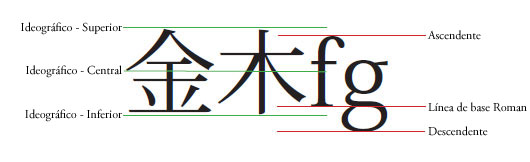
Los valores aceptados son TextBaseline.ROMAN, TextBaseline.ASCENT, TextBaseline.DESCENT, TextBaseline.IDEOGRAPHIC_TOP, TextBaseline.IDEOGRAPHIC_CENTER, TextBaseline.IDEOGRAPHIC_BOTTOM, TextBaseline.USE_DOMINANT_BASELINE, FormatValue.INHERIT.
El valor predeterminado es undefined e indica que no está definido.
Si son undefined durante el proceso, esta propiedad heredará su valor de un ascendiente. Si ningún ascendiente ha establecido esta propiedad, tendrá un valor de TextBaseline.USE_DOMINANT_BASELINE.
Implementación
public function get alignmentBaseline():* public function set alignmentBaseline(value:any):voidEmite
RangeError — Cuando el valor establecido no está dentro del rango de esta propiedad
|
Elementos de API relacionados
backgroundAlpha | propiedad |
backgroundAlpha:*| Versión del lenguaje: | ActionScript 3.0 |
| Versiones de motor de ejecución: | Flash Player 10, AIR 1.5 |
TextLayoutFormat: valor de transparencia alfa del fondo (adopta su valor predeterminado si es undefined durante el proceso). Un valor de 0 representa transparencia absoluta y un valor de 1 opacidad total. Los objetos de visualización que tienen alpha configurado con el valor 0 están activos, aunque no sean visibles.
Los valores aceptados oscilan entre 0 y 1 y FormatValue.INHERIT.
El valor predeterminado es undefined e indica que no está definido.
Si los valores son undefined durante el proceso, esta propiedad tendrá un valor de 1.
Implementación
public function get backgroundAlpha():* public function set backgroundAlpha(value:any):voidEmite
RangeError — Cuando el valor establecido no está dentro del rango de esta propiedad
|
backgroundColor | propiedad |
backgroundColor:*| Versión del lenguaje: | ActionScript 3.0 |
| Versiones de motor de ejecución: | Flash Player 10, AIR 1.5 |
TextLayoutFormat: color de fondo del texto (adopta su valor predeterminado si es undefined durante el proceso). Puede ser un valor constante de BackgroundColor.TRANSPARENT o un valor hexadecimal que especifica los tres valores RGB (rojo, verde, azul) de 8 bits; por ejemplo, 0xFF0000 es rojo y 0x00FF00 es verde.
Los valores aceptados como una cadena son BackgroundColor.TRANSPARENT, FormatValue.INHERIT y unidades de 0x0 a 0xffffffff.
El valor predeterminado es undefined e indica que no está definido.
Si los valores son undefined durante el proceso, esta propiedad tendrá un valor de BackgroundColor.TRANSPARENT.
Implementación
public function get backgroundColor():* public function set backgroundColor(value:any):voidEmite
RangeError — Cuando el valor establecido no está dentro del rango de esta propiedad
|
Elementos de API relacionados
baselineShift | propiedad |
baselineShift:*| Versión del lenguaje: | ActionScript 3.0 |
| Versiones de motor de ejecución: | Flash Player 10, AIR 1.5 |
TextLayoutFormat: cantidad de desplazamiento de línea de base desde el valor dominantBaseline. Las unidades se expresan en píxeles o como porcentaje del objeto fontSize (en cuyo caso, se debe introducir un valor de cadena, por ejemplo, 140%). Los valores positivos cambian la línea ascendente para texto horizontal (derecha para vertical) y los valores negativos cambian la línea descendente para texto horizontal (izquierda para vertical).
Los valores aceptados son BaselineShift.SUPERSCRIPT, BaselineShift.SUBSCRIPT, FormatValue.INHERIT.
Los valores aceptados como un número oscilan entre -1.000 y 1.000.
Los valores aceptados como un porcentaje oscilan entre los números -1.000 y 1.000.
El valor predeterminado es undefined e indica que no está definido.
Si son undefined durante el proceso, esta propiedad heredará su valor de un ascendiente. Si ningún ascendiente ha establecido esta propiedad, tendrá un valor de 0.0.
Implementación
public function get baselineShift():* public function set baselineShift(value:any):voidEmite
RangeError — Cuando el valor establecido no está dentro del rango de esta propiedad
|
Elementos de API relacionados
blockProgression | propiedad |
blockProgression:*| Versión del lenguaje: | ActionScript 3.0 |
| Versiones de motor de ejecución: | Flash Player 10, AIR 1.5 |
TextLayoutFormat: especifica una progresión vertical u horizontal de la línea de ubicación de los archivos. Las líneas se colocan bien de arriba abajo (BlockProgression.TB, utilizado para texto horizontal) o de derecha a izquierda (BlockProgression.RL, utilizado para texto vertical).
Los valores aceptados son BlockProgression.RL, BlockProgression.TB, FormatValue.INHERIT.
El valor predeterminado es undefined e indica que no está definido.
Si son undefined durante el proceso, esta propiedad heredará su valor de un ascendiente. Si ningún ascendiente ha establecido esta propiedad, tendrá un valor de BlockProgression.TB.
Implementación
public function get blockProgression():* public function set blockProgression(value:any):voidEmite
RangeError — Cuando el valor establecido no está dentro del rango de esta propiedad
|
Elementos de API relacionados
breakOpportunity | propiedad |
breakOpportunity:*| Versión del lenguaje: | ActionScript 3.0 |
| Versiones de motor de ejecución: | Flash Player 10, AIR 1.5 |
TextLayoutFormat: controla dónde se permite romper las líneas si se divide el texto en varias líneas. Establézcalo en BreakOpportunity.AUTO para romper el texto normalmente. Establézcalo en BreakOpportunity.NONE para no romper el texto a menos que el texto supere las medidas y no haya otro lugar para romper la línea. Establézcalo en BreakOpportunity.ANY para permitir romper la línea en cualquier lugar, no sólo entre palabras. Establézcalo en BreakOpportunity.ALL para que cada clúster tipográfico se coloque en una línea distinta (resulta útil para el texto de una ruta).
Los valores aceptados son BreakOpportunity.ALL, BreakOpportunity.ANY, BreakOpportunity.AUTO, BreakOpportunity.NONE, FormatValue.INHERIT.
El valor predeterminado es undefined e indica que no está definido.
Si son undefined durante el proceso, esta propiedad heredará su valor de un ascendiente. Si ningún ascendiente ha establecido esta propiedad, tendrá un valor de BreakOpportunity.AUTO.
Implementación
public function get breakOpportunity():* public function set breakOpportunity(value:any):voidEmite
RangeError — Cuando el valor establecido no está dentro del rango de esta propiedad
|
Elementos de API relacionados
cffHinting | propiedad |
cffHinting:*| Versión del lenguaje: | ActionScript 3.0 |
| Versiones de motor de ejecución: | Flash Player 10, AIR 1.5 |
TextLayoutFormat: tipo de sugerencia CFF utilizada para este texto. Las sugerencias CFF determinan si el motor de ejecución de Flash hará que las líneas horizontales intensas se ajusten o no a una cuadrícula de subpíxeles. Esta propiedad sólo se aplica si la propiedad renderingMode está establecida como RenderingMode.CFF y si la fuente está incorporada (la propiedad fontLookup se establece como FontLookup.EMBEDDED_CFF). En tamaños de pantalla pequeños, las sugerencias ofrecen texto claro y legible para los lectores.
Los valores aceptados son CFFHinting.NONE, CFFHinting.HORIZONTAL_STEM, FormatValue.INHERIT.
El valor predeterminado es undefined e indica que no está definido.
Si son undefined durante el proceso, esta propiedad heredará su valor de un ascendiente. Si ningún ascendiente ha establecido esta propiedad, tendrá un valor de CFFHinting.HORIZONTAL_STEM.
Implementación
public function get cffHinting():* public function set cffHinting(value:any):voidEmite
RangeError — Cuando el valor establecido no está dentro del rango de esta propiedad
|
Elementos de API relacionados
clearFloats | propiedad |
clearFloats:*| Versión del lenguaje: | ActionScript 3.0 |
| Versiones de motor de ejecución: | Flash Player 10, AIR 1.5 |
TextLayoutFormat: controla cómo ciñe el texto una posición flotante. Un valor de none le permitirá ceñir el texto más fielmente alrededor de una posición flotante. Un valor de izquierda hará que el texto que omita sobre cualquier parte del contenedor que tiene una posición flotante a la izquierda y un valor de derecha hará que el texto que omita sobre cualquier parte del contenedor que tiene posición flotante a la derecha. Un valor de ambos hará que el texto que omita sobre cualquier posición flotante.
Los valores aceptados son ClearFloats.START, ClearFloats.END, ClearFloats.LEFT, ClearFloats.RIGHT, ClearFloats.BOTH, ClearFloats.NONE, FormatValue.INHERIT.
El valor predeterminado es undefined e indica que no está definido.
Si los valores son undefined durante el proceso, esta propiedad tendrá un valor de ClearFloats.NONE.
Implementación
public function get clearFloats():* public function set clearFloats(value:any):voidEmite
RangeError — Cuando el valor establecido no está dentro del rango de esta propiedad
|
Elementos de API relacionados
color | propiedad |
color:*| Versión del lenguaje: | ActionScript 3.0 |
| Versiones de motor de ejecución: | Flash Player 10, AIR 1.5 |
TextLayoutFormat: color del texto. Un número hexadecimal que especifica tres valores RGB (rojo, verde, azul) de 8 bits; por ejemplo, 0xFF0000 es rojo y 0x00FF00 es verde.
El valor predeterminado es undefined e indica que no está definido.
Si son undefined durante el proceso, esta propiedad heredará su valor de un ascendiente. Si ningún ascendiente ha establecido esta propiedad, tendrá un valor de 0.
Implementación
public function get color():* public function set color(value:any):voidEmite
RangeError — Cuando el valor establecido no está dentro del rango de esta propiedad
|
columnCount | propiedad |
columnCount:*| Versión del lenguaje: | ActionScript 3.0 |
| Versiones de motor de ejecución: | Flash Player 10, AIR 1.5 |
TextLayoutFormat: número de las columnas de texto (adopta el valor predeterminado si es undefined durante el proceso). El número de columnas anula el resto de ajustes de columna. El valor es un entero o FormatValue.AUTO si no se especifica nada. Si no se especifica columnCount, se utiliza columnWidth para crear tantas columnas como quepan en el contenedor.
Los valores aceptados como cadena son FormatValue.AUTO, FormatValue.INHERIT y enteros de 1 a 50.
El valor predeterminado es undefined e indica que no está definido.
Si los valores son undefined durante el proceso, esta propiedad tendrá un valor de FormatValue.AUTO.
Implementación
public function get columnCount():* public function set columnCount(value:any):voidEmite
RangeError — Cuando el valor establecido no está dentro del rango de esta propiedad
|
Elementos de API relacionados
columnGap | propiedad |
columnGap:*| Versión del lenguaje: | ActionScript 3.0 |
| Versiones de motor de ejecución: | Flash Player 10, AIR 1.5 |
TextLayoutFormat: especifica la cantidad de espacio de medianil, en píxeles, para dejar entre las columnas (adopta el valor predeterminado si es undefined durante el proceso). El valor es un número.
Los valores aceptados son números que oscilan entre 0 y 1.000, y FormatValue.INHERIT.
El valor predeterminado es undefined e indica que no está definido.
Si los valores son undefined durante el proceso, esta propiedad tendrá un valor de 20.
Implementación
public function get columnGap():* public function set columnGap(value:any):voidEmite
RangeError — Cuando el valor establecido no está dentro del rango de esta propiedad
|
columnState | propiedad |
columnState:ColumnState [solo lectura] | Versión del lenguaje: | ActionScript 3.0 |
| Versiones de motor de ejecución: | Flash Player 10, AIR 1.5 |
Devuelve un objeto ColumnState que describe el número y las características de las columnas del contenedor. Estos valores se actualizan cuando se recompone el texto, bien como resultado de IFlowComposer.compose() o de IFlowComposer.updateAllControllers().
Implementación
public function get columnState():ColumnStateElementos de API relacionados
columnWidth | propiedad |
columnWidth:*| Versión del lenguaje: | ActionScript 3.0 |
| Versiones de motor de ejecución: | Flash Player 10, AIR 1.5 |
TextLayoutFormat: ancho de columna en píxeles (adopta el valor predeterminado si es undefined durante el proceso). Si especifica la anchura de las columnas, pero no el número de ellas, TextLayout creará tantas columnas como permita la anchura, teniendo en cuenta la anchura del propio contenedor y los ajustes de columnGap. El espacio restante se deja tras la última columna. El valor es un número.
Los valores aceptados como cadena son FormatValue.AUTO, FormatValue.INHERIT y números de 0 a 8.000.
El valor predeterminado es undefined e indica que no está definido.
Si los valores son undefined durante el proceso, esta propiedad tendrá un valor de FormatValue.AUTO.
Implementación
public function get columnWidth():* public function set columnWidth(value:any):voidEmite
RangeError — Cuando el valor establecido no está dentro del rango de esta propiedad
|
Elementos de API relacionados
compositionHeight | propiedad |
compositionHeight:Number [solo lectura] | Versión del lenguaje: | ActionScript 3.0 |
| Versiones de motor de ejecución: | Flash Player 10, AIR 1.5 |
Devuelve el espacio vertical permitido para texto dentro del contenedor. El valor se especifica en píxeles.
Implementación
public function get compositionHeight():NumberElementos de API relacionados
compositionWidth | propiedad |
compositionWidth:Number [solo lectura] | Versión del lenguaje: | ActionScript 3.0 |
| Versiones de motor de ejecución: | Flash Player 10, AIR 1.5 |
Devuelve el espacio horizontal permitido para texto dentro del contenedor. El valor se especifica en píxeles.
Implementación
public function get compositionWidth():NumberElementos de API relacionados
computedFormat | propiedad |
computedFormat:flashx.textLayout.formats:ITextLayoutFormat [solo lectura] | Versión del lenguaje: | ActionScript 3.0 |
| Versiones de motor de ejecución: | Flash Player 10, AIR 1.5 |
Devuelve una instancia de ITextLayoutFormat con los atributos aplicados a este contenedor, incluidos los atributos heredados de su elemento raíz.
Implementación
public function get computedFormat():flashx.textLayout.formats:ITextLayoutFormatElementos de API relacionados
container | propiedad |
container:Sprite [solo lectura] | Versión del lenguaje: | ActionScript 3.0 |
| Versiones de motor de ejecución: | Flash Player 10, AIR 1.5 |
Devuelve el objeto de visualización del contenedor que contiene las líneas de texto de esta instancia de ContainerController.
Implementación
public function get container():SpriteElementos de API relacionados
containerControllerInitialFormat | propiedad |
containerControllerInitialFormat:flashx.textLayout.formats:ITextLayoutFormatImplementación
public static function get containerControllerInitialFormat():flashx.textLayout.formats:ITextLayoutFormat public static function set containerControllerInitialFormat(value:flashx.textLayout.formats:ITextLayoutFormat):voidcoreStyles | propiedad |
coreStyles:Object [solo lectura] | Versión del lenguaje: | ActionScript 3.0 |
| Versiones de motor de ejecución: | Flash Player 10, AIR 1.5 |
Devuelve coreStyles de este objeto ContainerController. Tenga en cuenta que el método get hace una copia del diccionario principal de estilos. El objeto devuelto incluye los formatos que son definidos por TextLayoutFormat y están en TextLayoutFormat.description. El objeto devueltos está formado por un conjunto de parejas nombre de estilo-valor.
Implementación
public function get coreStyles():ObjectElementos de API relacionados
digitCase | propiedad |
digitCase:*| Versión del lenguaje: | ActionScript 3.0 |
| Versiones de motor de ejecución: | Flash Player 10, AIR 1.5 |
TextLayoutFormat: tipo de caja de dígitos utilizada para este texto. Establecer el valor en DigitCase.OLD_STYLE aproxima trazos de letras minúsculas con diversos ascendentes y descendientes. Las figuras están espaciadas proporcionalmente. Este estilo sólo está disponible sólo en algunos tipos de fuentes exclusivos, normalmente en fuentes suplementarias o de expertos. El ajuste DigitCase.LINING tiene altura de versalitas y suele tener espaciado sencillo para alinearse en los gráficos.
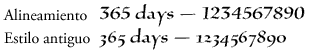
Los valores aceptados son DigitCase.DEFAULT, DigitCase.LINING, DigitCase.OLD_STYLE, FormatValue.INHERIT.
El valor predeterminado es undefined e indica que no está definido.
Si son undefined durante el proceso, esta propiedad heredará su valor de un ascendiente. Si ningún ascendiente ha establecido esta propiedad, tendrá un valor de DigitCase.DEFAULT.
Implementación
public function get digitCase():* public function set digitCase(value:any):voidEmite
RangeError — Cuando el valor establecido no está dentro del rango de esta propiedad
|
Elementos de API relacionados
digitWidth | propiedad |
digitWidth:*| Versión del lenguaje: | ActionScript 3.0 |
| Versiones de motor de ejecución: | Flash Player 10, AIR 1.5 |
TextLayoutFormat: tipo de anchura de dígitos para este texto. Puede ser DigitWidth.PROPORTIONAL, indicado para números individuales, o DigitWidth.TABULAR, indicado para números en tablas, gráficos y filas verticales.
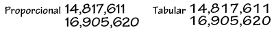
Los valores aceptados son DigitWidth.DEFAULT, DigitWidth.PROPORTIONAL, DigitWidth.TABULAR, FormatValue.INHERIT.
El valor predeterminado es undefined e indica que no está definido.
Si son undefined durante el proceso, esta propiedad heredará su valor de un ascendiente. Si ningún ascendiente ha establecido esta propiedad, tendrá un valor de DigitWidth.DEFAULT.
Implementación
public function get digitWidth():* public function set digitWidth(value:any):voidEmite
RangeError — Cuando el valor establecido no está dentro del rango de esta propiedad
|
Elementos de API relacionados
direction | propiedad |
direction:*| Versión del lenguaje: | ActionScript 3.0 |
| Versiones de motor de ejecución: | Flash Player 10, AIR 1.5 |
TextLayoutFormat: especifica la incorporación bidireccional predeterminada del texto del bloque de texto. Orden de lectura de izquierda a derecha, al estilo occidental, o de derecha a izquierda, al estilo de lenguas como el árabe o el hebreo. Esta propiedad también afecta a la dirección de la columna cuando se aplica a todo el contenedor. Las columnas pueden estar orientadas de izquierda a derecha o de derecha a izquierda, igual que el texto. A continuación se muestran algunos ejemplos:

Los valores aceptados son Direction.LTR, Direction.RTL, FormatValue.INHERIT.
El valor predeterminado es undefined e indica que no está definido.
Si son undefined durante el proceso, esta propiedad heredará su valor de un ascendiente. Si ningún ascendiente ha establecido esta propiedad, tendrá un valor de Direction.LTR.
Implementación
public function get direction():* public function set direction(value:any):voidEmite
RangeError — Cuando el valor establecido no está dentro del rango de esta propiedad
|
Elementos de API relacionados
dominantBaseline | propiedad |
dominantBaseline:*| Versión del lenguaje: | ActionScript 3.0 |
| Versiones de motor de ejecución: | Flash Player 10, AIR 1.5 |
TextLayoutFormat: especifica qué líneas de base del elemento se ajustan a alignmentBaseline para determinar la posición vertical del elemento en la línea. Un valor de TextBaseline.AUTO selecciona la línea de base dominante a partir de la propiedad locale del párrafo principal. Para japonés y chino, el valor de la línea de base seleccionada es TextBaseline.IDEOGRAPHIC_CENTER; para todos los demás es TextBaseline.ROMAN. Estas elecciones de línea base se determinan por la selección de la fuente y de su tamaño.
Los valores aceptados son FormatValue.AUTO, TextBaseline.ROMAN, TextBaseline.ASCENT, TextBaseline.DESCENT, TextBaseline.IDEOGRAPHIC_TOP, TextBaseline.IDEOGRAPHIC_CENTER, TextBaseline.IDEOGRAPHIC_BOTTOM, FormatValue.INHERIT.
El valor predeterminado es undefined e indica que no está definido.
Si son undefined durante el proceso, esta propiedad heredará su valor de un ascendiente. Si ningún ascendiente ha establecido esta propiedad, tendrá un valor de FormatValue.AUTO.
Implementación
public function get dominantBaseline():* public function set dominantBaseline(value:any):voidEmite
RangeError — Cuando el valor establecido no está dentro del rango de esta propiedad
|
Elementos de API relacionados
firstBaselineOffset | propiedad |
firstBaselineOffset:*| Versión del lenguaje: | ActionScript 3.0 |
| Versiones de motor de ejecución: | Flash Player 10, AIR 1.5 |
TextLayoutFormat: especifica la posición de línea de base de la primera línea en el contenedor. La línea de base a la que hace referencia esta propiedad depende de la configuración regional del nivel del contenedor. Para japonés y chino es TextBaseline.IDEOGRAPHIC_BOTTOM; para el resto es TextBaseline.ROMAN. El desplazamiento desde el margen superior (o desde el margen derecho si blockProgression es RL) del contenedor hasta la línea base de la primera línea puede ser BaselineOffset.ASCENT (equivalente al valor ascendente de la línea), BaselineOffset.LINE_HEIGHT (equivalente a la altura de dicha primera línea) o cualquier valor numérico fijo que especifique una distancia absoluta. BaselineOffset.AUTO alinea el valor ascendente de la línea con el margen superior del contenedor.
 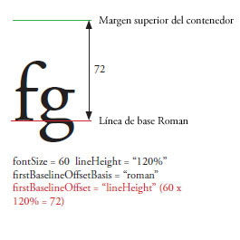
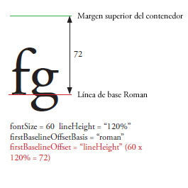

Los valores aceptados como una cadena son BaselineOffset.AUTO, BaselineOffset.ASCENT, BaselineOffset.LINE_HEIGHT, FormatValue.INHERIT y números de 0 a 1.000.
El valor predeterminado es undefined e indica que no está definido.
Si son undefined durante el proceso, esta propiedad heredará su valor de un ascendiente. Si ningún ascendiente ha establecido esta propiedad, tendrá un valor de BaselineOffset.AUTO.
Implementación
public function get firstBaselineOffset():* public function set firstBaselineOffset(value:any):voidEmite
RangeError — Cuando el valor establecido no está dentro del rango de esta propiedad
|
Elementos de API relacionados
flowComposer | propiedad |
flowComposer:IFlowComposer [solo lectura] | Versión del lenguaje: | ActionScript 3.0 |
| Versiones de motor de ejecución: | Flash Player 10, AIR 1.5 |
Devuelve el objeto de composición de flujo que compone y resalta el texto en el contenedor administrado por este controlador.
Implementación
public function get flowComposer():IFlowComposerElementos de API relacionados
fontFamily | propiedad |
fontFamily:*| Versión del lenguaje: | ActionScript 3.0 |
| Versiones de motor de ejecución: | Flash Player 10, AIR 1.5 |
TextLayoutFormat: nombre de la fuente que se va a utilizar o una lista de nombres de fuentes separados por comas. El motor de ejecución de Flash representa el elemento con la primera fuente disponible de la lista. Por ejemplo, Arial, Helvetica, _sans hace que el reproductor busque Arial y, luego, Helvetica si no encuentra ninguna fuente Arial: seguidamente, busca _sans si tampoco encuentra nada.
El valor predeterminado es undefined e indica que no está definido.
Si son undefined durante el proceso, esta propiedad heredará su valor de un ascendiente. Si ningún ascendiente ha establecido esta propiedad, tendrá un valor de Arial.
Implementación
public function get fontFamily():* public function set fontFamily(value:any):voidEmite
RangeError — Cuando el valor establecido no está dentro del rango de esta propiedad
|
fontLookup | propiedad |
fontLookup:*| Versión del lenguaje: | ActionScript 3.0 |
| Versiones de motor de ejecución: | Flash Player 10, AIR 1.5 |
TextLayoutFormat: búsqueda de fuentes para utilizar. Si especifica FontLookup.DEVICE, utiliza las fuentes instaladas en el sistema que ejecuta el archivo SWF. Las fuentes de dispositivo hacen que el tamaño de la película sea menor, pero el texto no siempre se presenta del mismo modo en los distintos sistemas y plataformas. Si especifica FontLookup.EMBEDDED_CFF, utiliza contornos de fuentes incorporadas en el archivo SWF publicado. Las fuentes incorporadas aumentan el tamaño del archivo SWF (a veces de forma muy considerable), pero el texto se visualiza siempre del mismo modo en la fuente elegida.
Los valores aceptados son FontLookup.DEVICE, FontLookup.EMBEDDED_CFF, FormatValue.INHERIT.
El valor predeterminado es undefined e indica que no está definido.
Si son undefined durante el proceso, esta propiedad heredará su valor de un ascendiente. Si ningún ascendiente ha establecido esta propiedad, tendrá un valor de FontLookup.DEVICE.
Implementación
public function get fontLookup():* public function set fontLookup(value:any):voidEmite
RangeError — Cuando el valor establecido no está dentro del rango de esta propiedad
|
Elementos de API relacionados
fontSize | propiedad |
fontSize:*| Versión del lenguaje: | ActionScript 3.0 |
| Versiones de motor de ejecución: | Flash Player 10, AIR 1.5 |
TextLayoutFormat: el tamaño del texto, expresado en píxeles.
Los valores aceptados oscilan entre 1 y 720, y FormatValue.INHERIT.
El valor predeterminado es undefined e indica que no está definido.
Si son undefined durante el proceso, esta propiedad heredará su valor de un ascendiente. Si ningún ascendiente ha establecido esta propiedad, tendrá un valor de 12.
Implementación
public function get fontSize():* public function set fontSize(value:any):voidEmite
RangeError — Cuando el valor establecido no está dentro del rango de esta propiedad
|
fontStyle | propiedad |
fontStyle:*| Versión del lenguaje: | ActionScript 3.0 |
| Versiones de motor de ejecución: | Flash Player 10, AIR 1.5 |
TextLayoutFormat: estilo del texto. Puede ser FontPosture.NORMAL, para texto normal o FontPosture.ITALIC para texto en cursiva. Esta propiedad sólo se aplica a fuentes de dispositivo (la propiedad fontLookup se establece como flash.text.engine.FontLookup.DEVICE).
Los valores aceptados son FontPosture.NORMAL, FontPosture.ITALIC, FormatValue.INHERIT.
El valor predeterminado es undefined e indica que no está definido.
Si son undefined durante el proceso, esta propiedad heredará su valor de un ascendiente. Si ningún ascendiente ha establecido esta propiedad, tendrá un valor de FontPosture.NORMAL.
Implementación
public function get fontStyle():* public function set fontStyle(value:any):voidEmite
RangeError — Cuando el valor establecido no está dentro del rango de esta propiedad
|
Elementos de API relacionados
fontWeight | propiedad |
fontWeight:*| Versión del lenguaje: | ActionScript 3.0 |
| Versiones de motor de ejecución: | Flash Player 10, AIR 1.5 |
TextLayoutFormat: grosor del texto. Puede ser FontWeight.NORMAL para texto normal o FontWeight.BOLD. Sólo se aplica a fuentes de dispositivo (la propiedad fontLookup se establece como flash.text.engine.FontLookup.DEVICE).
Los valores aceptados son FontWeight.NORMAL, FontWeight.BOLD, FormatValue.INHERIT.
El valor predeterminado es undefined e indica que no está definido.
Si son undefined durante el proceso, esta propiedad heredará su valor de un ascendiente. Si ningún ascendiente ha establecido esta propiedad, tendrá un valor de FontWeight.NORMAL.
Implementación
public function get fontWeight():* public function set fontWeight(value:any):voidEmite
RangeError — Cuando el valor establecido no está dentro del rango de esta propiedad
|
Elementos de API relacionados
format | propiedad |
format:flashx.textLayout.formats:ITextLayoutFormat| Versión del lenguaje: | ActionScript 3.0 |
| Versiones de motor de ejecución: | Flash Player 10, AIR 1.5 |
Almacena el objeto ITextLayoutFormat que contiene los atributos de este contenedor. El controlador hereda las propiedades del contenedor desde el objeto TextFlow del que forma parte. Esta propiedad permite que distintos controladores del mismo flujo de texto puedan tener, por ejemplo, distintos valores de columna o de relleno.
Implementación
public function get format():flashx.textLayout.formats:ITextLayoutFormat public function set format(value:flashx.textLayout.formats:ITextLayoutFormat):voidElementos de API relacionados
horizontalScrollPolicy | propiedad |
horizontalScrollPolicy:String| Versión del lenguaje: | ActionScript 3.0 |
| Versiones de motor de ejecución: | Flash Player 10, AIR 1.5 |
Especifica la política de desplazamiento horizontal. Se puede establecer asignando una de las constantes de la clase ScrollPolicy: ON, OFF o AUTO.
Implementación
public function get horizontalScrollPolicy():String public function set horizontalScrollPolicy(value:String):voidElementos de API relacionados
horizontalScrollPosition | propiedad |
horizontalScrollPosition:Number| Versión del lenguaje: | ActionScript 3.0 |
| Versiones de motor de ejecución: | Flash Player 10, AIR 1.5 |
Especifica la ubicación actual de desplazamiento horizontal en el escenario. El valor especifica el número de píxeles desde la izquierda.
Implementación
public function get horizontalScrollPosition():Number public function set horizontalScrollPosition(value:Number):voidinteractionManager | propiedad |
interactionManager:ISelectionManager [solo lectura] | Versión del lenguaje: | ActionScript 3.0 |
| Versiones de motor de ejecución: | Flash Player 10, AIR 1.5 |
El elemento InteractionManager asociado a este objeto TextFlow.
Controla toda la selección y edición del texto. Si el objeto TextFlow no se puede seleccionar, interactionManager es null. Para que TextFlow se pueda editar, asigne un elemento interactionManager que sea tanto ISelectionManager como IEditManager. Para crear un objeto TextFlow de sólo lectura y que permita selección, asigne un interactionManager que sea solamente ISelectionManager.
Implementación
public function get interactionManager():ISelectionManagerElementos de API relacionados
justificationRule | propiedad |
justificationRule:*| Versión del lenguaje: | ActionScript 3.0 |
| Versiones de motor de ejecución: | Flash Player 10, AIR 1.5 |
TextLayoutFormat: regla utilizada para justificar texto de un párrafo. El valor predeterminado es FormatValue.AUTO, que justifica el texto basado en la propiedad locale del párrafo. Para todos los idiomas, excepto para japonés y chino, FormatValue.AUTO se convierte en JustificationRule.SPACE, y añade espacio adicional a los caracteres de espacio. Para japonés y chino, FormatValue.AUTO se convierte en JustficationRule.EAST_ASIAN. En parte, la justificación cambia el espaciado de la puntuación. La coma (en texto Roman) y los puntos (en japonés) toman la anchura total del un carácter pero el texto asiático oriental sólo toma la mitad de la anchura del carácter. Además, en el texto asiático oriental, el espaciado entre signos de puntuación secuenciales se estrecha para adaptarse a las convenciones tipográficas tradicionales de Asia Oriental. Observe también en el siguiente ejemplo que el interlineado se aplica a la segunda línea de los párrafos. En la versión asiática, las dos últimas líneas empujan a la izquierda. En la versión Roman, la segunda línea y las siguientes empujan a la izquierda.

Los valores aceptados son JustificationRule.EAST_ASIAN, JustificationRule.SPACE, FormatValue.AUTO, FormatValue.INHERIT.
El valor predeterminado es undefined e indica que no está definido.
Si son undefined durante el proceso, esta propiedad heredará su valor de un ascendiente. Si ningún ascendiente ha establecido esta propiedad, tendrá un valor de FormatValue.AUTO.
Implementación
public function get justificationRule():* public function set justificationRule(value:any):voidEmite
RangeError — Cuando el valor establecido no está dentro del rango de esta propiedad
|
Elementos de API relacionados
justificationStyle | propiedad |
justificationStyle:*| Versión del lenguaje: | ActionScript 3.0 |
| Versiones de motor de ejecución: | Flash Player 10, AIR 1.5 |
TextLayoutFormat: el estilo utilizado para la justificación del párrafo. Utilícelo en combinación con un ajuste JustificationRule.EAST_ASIAN de justificationRule. El valor predeterminado de FormatValue.AUTO se resuelve como JustificationStyle.PUSH_IN_KINSOKU para todas las configuraciones regionales. Las constantes definidas por la clase JustificationStyle especifican opciones para gestionar caracteres kinsoku, que son caracteres japoneses que no pueden mostrarse al principio o al final de una línea. Si quiere que el texto esté más separado, especifique JustificationStyle.PUSH-OUT-ONLY. Si quiere que el comportamiento sea similar al que se obtiene con JustificationRule.SPACE de justificationRule, utilice JustificationStyle.PRIORITIZE-LEAST-ADJUSTMENT.
Los valores aceptados son JustificationStyle.PRIORITIZE_LEAST_ADJUSTMENT, JustificationStyle.PUSH_IN_KINSOKU, JustificationStyle.PUSH_OUT_ONLY, FormatValue.AUTO, FormatValue.INHERIT.
El valor predeterminado es undefined e indica que no está definido.
Si son undefined durante el proceso, esta propiedad heredará su valor de un ascendiente. Si ningún ascendiente ha establecido esta propiedad, tendrá un valor de FormatValue.AUTO.
Implementación
public function get justificationStyle():* public function set justificationStyle(value:any):voidEmite
RangeError — Cuando el valor establecido no está dentro del rango de esta propiedad
|
Elementos de API relacionados
kerning | propiedad |
kerning:*| Versión del lenguaje: | ActionScript 3.0 |
| Versiones de motor de ejecución: | Flash Player 10, AIR 1.5 |
TextLayoutFormat: el ajuste entre caracteres ajusta los píxeles entre determinados pares de caracteres para que puedan leerse mejor. Todas las fuentes con tablas de ajuste entre caracteres admiten ajuste entre caracteres.
Los valores aceptados son Kerning.ON, Kerning.OFF, Kerning.AUTO, FormatValue.INHERIT.
El valor predeterminado es undefined e indica que no está definido.
Si son undefined durante el proceso, esta propiedad heredará su valor de un ascendiente. Si ningún ascendiente ha establecido esta propiedad, tendrá un valor de Kerning.AUTO.
Implementación
public function get kerning():* public function set kerning(value:any):voidEmite
RangeError — Cuando el valor establecido no está dentro del rango de esta propiedad
|
Elementos de API relacionados
leadingModel | propiedad |
leadingModel:*| Versión del lenguaje: | ActionScript 3.0 |
| Versiones de motor de ejecución: | Flash Player 10, AIR 1.5 |
TextLayoutFormat: especifica el modelo de interlineado, que es una combinación de la base y la dirección del interlineado. La base de interlineado es la línea base a la que hace referencia la propiedad lineHeight. La dirección de interlineado determina si la propiedad lineHeight hace referencia a la distancia de una línea base desde la línea anterior o la siguiente. El valor predeterminado de FormatValue.AUTO se resuelve a partir de la propiedad locale del párrafo. Para japonés y chino es LeadingModel.IDEOGRAPHIC_TOP_DOWN; para el resto es LeadingModel.ROMAN_UP.
Base de interlineado:
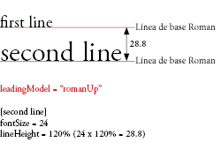 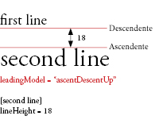 
Dirección de interlineado:
 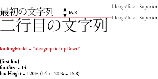
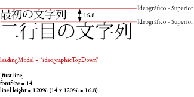 
Los valores aceptados son LeadingModel.ROMAN_UP, LeadingModel.IDEOGRAPHIC_TOP_UP, LeadingModel.IDEOGRAPHIC_CENTER_UP, LeadingModel.IDEOGRAPHIC_TOP_DOWN, LeadingModel.IDEOGRAPHIC_CENTER_DOWN, LeadingModel.APPROXIMATE_TEXT_FIELD, LeadingModel.ASCENT_DESCENT_UP, LeadingModel.BOX, LeadingModel.AUTO, FormatValue.INHERIT.
El valor predeterminado es undefined e indica que no está definido.
Si son undefined durante el proceso, esta propiedad heredará su valor de un ascendiente. Si ningún ascendiente ha establecido esta propiedad, tendrá un valor de LeadingModel.AUTO.
Implementación
public function get leadingModel():* public function set leadingModel(value:any):voidEmite
RangeError — Cuando el valor establecido no está dentro del rango de esta propiedad
|
Elementos de API relacionados
ligatureLevel | propiedad |
ligatureLevel:*| Versión del lenguaje: | ActionScript 3.0 |
| Versiones de motor de ejecución: | Flash Player 10, AIR 1.5 |
TextLayoutFormat: controla cuál de las ligaduras que se definen en la fuente se puede utilizar en el texto. Las ligaduras que aparecen para cada configuración dependen de la fuente. Se produce una ligadura cuando se unen dos o más formatos de carta en un único glifo. Las ligaduras normalmente sustituyen a los caracteres consecutivos que comparten componentes comunes, como parejas de letras 'fi', 'fl' o 'ae'. Se utilizan con conjuntos de caracteres latinos y no latinos. Las ligaduras activadas por los valores de la clase LigatureLevel (MINIMUM, COMMON, UNCOMMON y EXOTIC) son aditivas. Cada valor permite un nuevo conjunto de ligaduras, pero también incluye los de tipos anteriores.
Nota: si trabaja con fuentes Arabic o Syriac, ligatureLevel se debe establecer como MINIMUM o en un valor superior.

Los valores aceptados son LigatureLevel.MINIMUM, LigatureLevel.COMMON, LigatureLevel.UNCOMMON, LigatureLevel.EXOTIC, FormatValue.INHERIT.
El valor predeterminado es undefined e indica que no está definido.
Si son undefined durante el proceso, esta propiedad heredará su valor de un ascendiente. Si ningún ascendiente ha establecido esta propiedad, tendrá un valor de LigatureLevel.COMMON.
Implementación
public function get ligatureLevel():* public function set ligatureLevel(value:any):voidEmite
RangeError — Cuando el valor establecido no está dentro del rango de esta propiedad
|
Elementos de API relacionados
lineBreak | propiedad |
lineBreak:*| Versión del lenguaje: | ActionScript 3.0 |
| Versiones de motor de ejecución: | Flash Player 10, AIR 1.5 |
TextLayoutFormat: controla el ajuste del texto dentro del contenedor (adopta el valor predeterminado si es undefined durante el proceso). El texto del contenedor se puede establecer para que se ajuste a la anchura del contenedor (LineBreak.TO_FIT). También se puede establecer para que se rompa únicamente en caracteres concretos de saltos de párrafo o de línea (LineBreak.EXPLICIT).
Los valores aceptados son LineBreak.EXPLICIT, LineBreak.TO_FIT, FormatValue.INHERIT.
El valor predeterminado es undefined e indica que no está definido.
Si es undefined durante la cascada esta propiedad tendrá siempre un valor de LineBreak.TO_FIT.
Implementación
public function get lineBreak():* public function set lineBreak(value:any):voidEmite
RangeError — Cuando el valor establecido no está dentro del rango de esta propiedad
|
Elementos de API relacionados
lineHeight | propiedad |
lineHeight:*| Versión del lenguaje: | ActionScript 3.0 |
| Versiones de motor de ejecución: | Flash Player 10, AIR 1.5 |
TextLayoutFormat: controles de interlineado para el texto. La distancia desde la línea base de la línea anterior o siguiente (asumiendo que LeadingModel) de la línea base de la línea actual es igual a la cantidad máxima de interlineado aplicado a cualquier carácter de la línea. Puede ser un número o un porcentaje. Si especifica un porcentaje, introduzca un valor de cadena, por ejemplo, 140%.
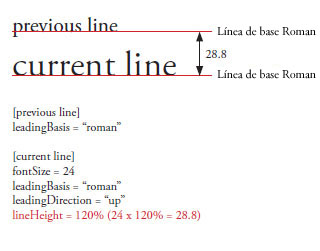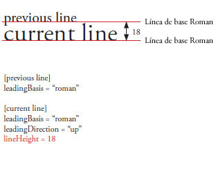
Los valores aceptados como un número oscilan entre -720 y 720.
Los valores aceptados como un porcentaje oscilan entre -1000% y 1000%.
Entre los valores aceptados se incluye FormatValue.INHERIT.
El valor predeterminado es undefined e indica que no está definido.
Si son undefined durante el proceso, esta propiedad heredará su valor de un ascendiente. Si ningún ascendiente ha establecido esta propiedad, tendrá un valor de 120%.
Implementación
public function get lineHeight():* public function set lineHeight(value:any):voidEmite
RangeError — Cuando el valor establecido no está dentro del rango de esta propiedad
|
lineThrough | propiedad |
lineThrough:*| Versión del lenguaje: | ActionScript 3.0 |
| Versiones de motor de ejecución: | Flash Player 10, AIR 1.5 |
TextLayoutFormat: si es true, se aplica el tachado (una línea dibujada en el centro del texto).
Los valores admitidos son true, false y FormatValue.INHERIT.
El valor predeterminado es undefined e indica que no está definido.
Si son undefined durante el proceso, esta propiedad heredará su valor de un ascendiente. Si ningún ascendiente ha establecido esta propiedad, tendrá un valor de false.
Implementación
public function get lineThrough():* public function set lineThrough(value:any):voidEmite
RangeError — Cuando el valor establecido no está dentro del rango de esta propiedad
|
linkActiveFormat | propiedad |
linkActiveFormat:*| Versión del lenguaje: | ActionScript 3.0 |
| Versiones de motor de ejecución: | Flash Player 10, AIR 1.5 |
TextLayoutFormat: Define los atributos de formato utilizados por los vínculos de estado normal. Este valor se propaga por la jerarquía y se aplica a los enlaces descendientes. Acepta inherit, ITextLayoutFormat o convierte un conjunto de objetos con claves y valores como miembros en un TextLayoutFormat.
Entre los valores aceptados se incluye FormatValue.INHERIT.
El valor predeterminado es undefined e indica que no está definido.
Si son undefined durante el proceso, esta propiedad heredará su valor de un ascendiente. Si ningún ascendiente ha establecido esta propiedad, tendrá un valor de null.
Implementación
public function get linkActiveFormat():* public function set linkActiveFormat(value:any):voidEmite
RangeError — Cuando el valor establecido no está dentro del rango de esta propiedad
|
linkHoverFormat | propiedad |
linkHoverFormat:*| Versión del lenguaje: | ActionScript 3.0 |
| Versiones de motor de ejecución: | Flash Player 10, AIR 1.5 |
TextLayoutFormat: Define los atributos de formato utilizados para los vínculos al pasar por encima con el ratón, cuando éste se encuentra dentro de los límites (desplazamiento sobre) un vínculo. Este valor se propaga por la jerarquía y se aplica a los enlaces descendientes. Acepta inherit, ITextLayoutFormat o convierte un conjunto de objetos con claves y valores como miembros en un TextLayoutFormat.
Entre los valores aceptados se incluye FormatValue.INHERIT.
El valor predeterminado es undefined e indica que no está definido.
Si son undefined durante el proceso, esta propiedad heredará su valor de un ascendiente. Si ningún ascendiente ha establecido esta propiedad, tendrá un valor de null.
Implementación
public function get linkHoverFormat():* public function set linkHoverFormat(value:any):voidEmite
RangeError — Cuando el valor establecido no está dentro del rango de esta propiedad
|
linkNormalFormat | propiedad |
linkNormalFormat:*| Versión del lenguaje: | ActionScript 3.0 |
| Versiones de motor de ejecución: | Flash Player 10, AIR 1.5 |
TextLayoutFormat: Define los atributos de formato utilizados por los vínculos de estado normal. Este valor se propaga por la jerarquía y se aplica a los enlaces descendientes. Acepta inherit, ITextLayoutFormat o convierte un conjunto de objetos con claves y valores como miembros en un TextLayoutFormat.
Entre los valores aceptados se incluye FormatValue.INHERIT.
El valor predeterminado es undefined e indica que no está definido.
Si son undefined durante el proceso, esta propiedad heredará su valor de un ascendiente. Si ningún ascendiente ha establecido esta propiedad, tendrá un valor de null.
Implementación
public function get linkNormalFormat():* public function set linkNormalFormat(value:any):voidEmite
RangeError — Cuando el valor establecido no está dentro del rango de esta propiedad
|
listAutoPadding | propiedad |
listAutoPadding:*| Versión del lenguaje: | ActionScript 3.0 |
| Versiones de motor de ejecución: | Flash Player 10, AIR 1.5 |
TextLayoutFormat: esto especifica una sangría automática para el borde inicial de listas cuando el valor de margen de la lista de ese lado es auto.
Los valores aceptados oscilan entre -1.000 y 1.000, y FormatValue.INHERIT.
El valor predeterminado es undefined e indica que no está definido.
Si son undefined durante el proceso, esta propiedad heredará su valor de un ascendiente. Si ningún ascendiente ha establecido esta propiedad, tendrá un valor de 40.
Implementación
public function get listAutoPadding():* public function set listAutoPadding(value:any):voidEmite
RangeError — Cuando el valor establecido no está dentro del rango de esta propiedad
|
listMarkerFormat | propiedad |
listMarkerFormat:*| Versión del lenguaje: | ActionScript 3.0 |
| Versiones de motor de ejecución: | Flash Player 10, AIR 1.5 |
TextLayoutFormat: define los atributos de formato de lista de marcadores. Este valor se propaga por la jerarquía y se aplica a los enlaces descendientes. Acepta inherit, IListMarkerFormat o convierte un conjunto de objetos con claves y valores como miembros en un ListMarkerFormat.
Entre los valores aceptados se incluye FormatValue.INHERIT.
El valor predeterminado es undefined e indica que no está definido.
Si son undefined durante el proceso, esta propiedad heredará su valor de un ascendiente. Si ningún ascendiente ha establecido esta propiedad, tendrá un valor de null.
Implementación
public function get listMarkerFormat():* public function set listMarkerFormat(value:any):voidEmite
RangeError — Cuando el valor establecido no está dentro del rango de esta propiedad
|
listStylePosition | propiedad |
listStylePosition:*| Versión del lenguaje: | ActionScript 3.0 |
| Versiones de motor de ejecución: | Flash Player 10, AIR 1.5 |
TextLayoutFormat:
Los valores aceptados son ListStylePosition.INSIDE, ListStylePosition.OUTSIDE, FormatValue.INHERIT.
El valor predeterminado es undefined e indica que no está definido.
Si son undefined durante el proceso, esta propiedad heredará su valor de un ascendiente. Si ningún ascendiente ha establecido esta propiedad, tendrá un valor de ListStylePosition.OUTSIDE.
Implementación
public function get listStylePosition():* public function set listStylePosition(value:any):voidEmite
RangeError — Cuando el valor establecido no está dentro del rango de esta propiedad
|
Elementos de API relacionados
listStyleType | propiedad |
listStyleType:*| Versión del lenguaje: | ActionScript 3.0 |
| Versiones de motor de ejecución: | Flash Player 10, AIR 1.5 |
TextLayoutFormat:
Los valores aceptados son ListStyleType.UPPER_ALPHA, ListStyleType.LOWER_ALPHA, ListStyleType.UPPER_ROMAN, ListStyleType.LOWER_ROMAN, ListStyleType.NONE, ListStyleType.DISC, ListStyleType.CIRCLE, ListStyleType.SQUARE, ListStyleType.BOX, ListStyleType.CHECK, ListStyleType.DIAMOND, ListStyleType.HYPHEN, ListStyleType.ARABIC_INDIC, ListStyleType.BENGALI, ListStyleType.DECIMAL, ListStyleType.DECIMAL_LEADING_ZERO, ListStyleType.DEVANAGARI, ListStyleType.GUJARATI, ListStyleType.GURMUKHI, ListStyleType.KANNADA, ListStyleType.PERSIAN, ListStyleType.THAI, ListStyleType.URDU, ListStyleType.CJK_EARTHLY_BRANCH, ListStyleType.CJK_HEAVENLY_STEM, ListStyleType.HANGUL, ListStyleType.HANGUL_CONSTANT, ListStyleType.HIRAGANA, ListStyleType.HIRAGANA_IROHA, ListStyleType.KATAKANA, ListStyleType.KATAKANA_IROHA, ListStyleType.LOWER_ALPHA, ListStyleType.LOWER_GREEK, ListStyleType.LOWER_LATIN, ListStyleType.UPPER_ALPHA, ListStyleType.UPPER_GREEK, ListStyleType.UPPER_LATIN, FormatValue.INHERIT.
El valor predeterminado es undefined e indica que no está definido.
Si son undefined durante el proceso, esta propiedad heredará su valor de un ascendiente. Si ningún ascendiente ha establecido esta propiedad, tendrá un valor de ListStyleType.DISC.
Implementación
public function get listStyleType():* public function set listStyleType(value:any):voidEmite
RangeError — Cuando el valor establecido no está dentro del rango de esta propiedad
|
Elementos de API relacionados
locale | propiedad |
locale:*| Versión del lenguaje: | ActionScript 3.0 |
| Versiones de motor de ejecución: | Flash Player 10, AIR 1.5 |
TextLayoutFormat: configuración regional del texto. Controla las transformaciones de la caja y su forma. Se utilizan los identificadores estándar de configuración regional descritos en la Norma Técnica Unicode 35. Por ejemplo, en, en_US y en-US corresponden todos al inglés, ja es japonés.
El valor predeterminado es undefined e indica que no está definido.
Si son undefined durante el proceso, esta propiedad heredará su valor de un ascendiente. Si ningún ascendiente ha establecido esta propiedad, tendrá un valor de en.
Implementación
public function get locale():* public function set locale(value:any):voidEmite
RangeError — Cuando el valor establecido no está dentro del rango de esta propiedad
|
paddingBottom | propiedad |
paddingBottom:*| Versión del lenguaje: | ActionScript 3.0 |
| Versiones de motor de ejecución: | Flash Player 10, AIR 1.5 |
TextLayoutFormat: margen inferior en píxeles. El valor predeterminado de auto es cero excepto en listas que obtienen un margen inicial lateral de 45. (adopta el valor predeterminado si es undefined durante el proceso). Espacio entre el borde superior del contenedor y el texto. El valor es un número o auto.
Con texto horizontal (en contenedores con desplazamiento y varias columnas), la primera y la última columna mostrarán el relleno como espacio en blanco en la parte inferior del contenedor. No obstante, es posible que deba desplazarse para poder ver el relleno de la última columna.
Los valores aceptados como cadena son FormatValue.AUTO, FormatValue.INHERIT y números del -8000 al 8000.
El valor predeterminado es undefined e indica que no está definido.
Si los valores son undefined durante el proceso, esta propiedad tendrá un valor de FormatValue.AUTO.
Implementación
public function get paddingBottom():* public function set paddingBottom(value:any):voidEmite
RangeError — Cuando el valor establecido no está dentro del rango de esta propiedad
|
Elementos de API relacionados
paddingLeft | propiedad |
paddingLeft:*| Versión del lenguaje: | ActionScript 3.0 |
| Versiones de motor de ejecución: | Flash Player 10, AIR 1.5 |
TextLayoutFormat: margen izquierdo en píxeles. El valor predeterminado de auto es cero excepto en listas que obtienen un margen inicial lateral de 45. (adopta el valor predeterminado si es undefined durante el proceso). Espacio entre el borde izquierdo del contenedor y el texto. El valor es un número o auto.
Con texto vertical (en contenedores con desplazamiento y varias columnas), la primera y la última columna mostrarán el relleno como espacio en blanco al final del contenedor. No obstante, es posible que deba desplazarse para poder ver el relleno de la última columna.
Los valores aceptados como cadena son FormatValue.AUTO, FormatValue.INHERIT y números del -8000 al 8000.
El valor predeterminado es undefined e indica que no está definido.
Si los valores son undefined durante el proceso, esta propiedad tendrá un valor de FormatValue.AUTO.
Implementación
public function get paddingLeft():* public function set paddingLeft(value:any):voidEmite
RangeError — Cuando el valor establecido no está dentro del rango de esta propiedad
|
Elementos de API relacionados
paddingRight | propiedad |
paddingRight:*| Versión del lenguaje: | ActionScript 3.0 |
| Versiones de motor de ejecución: | Flash Player 10, AIR 1.5 |
TextLayoutFormat: margen derecho en píxeles. El valor predeterminado de auto es cero excepto en listas que obtienen un margen inicial lateral de 45. (adopta el valor predeterminado si es undefined durante el proceso). Espacio entre el borde derecho del contenedor y el texto. El valor es un número o auto.
Los valores aceptados como cadena son FormatValue.AUTO, FormatValue.INHERIT y números del -8000 al 8000.
El valor predeterminado es undefined e indica que no está definido.
Si los valores son undefined durante el proceso, esta propiedad tendrá un valor de FormatValue.AUTO.
Implementación
public function get paddingRight():* public function set paddingRight(value:any):voidEmite
RangeError — Cuando el valor establecido no está dentro del rango de esta propiedad
|
Elementos de API relacionados
paddingTop | propiedad |
paddingTop:*| Versión del lenguaje: | ActionScript 3.0 |
| Versiones de motor de ejecución: | Flash Player 10, AIR 1.5 |
TextLayoutFormat: margen superior en píxeles. El valor predeterminado de auto es cero excepto en listas que obtienen un margen inicial lateral de 45. (adopta el valor predeterminado si es undefined durante el proceso). Espacio entre el borde superior del contenedor y el texto. El valor es un número o auto.
Los valores aceptados como cadena son FormatValue.AUTO, FormatValue.INHERIT y números del -8000 al 8000.
El valor predeterminado es undefined e indica que no está definido.
Si los valores son undefined durante el proceso, esta propiedad tendrá un valor de FormatValue.AUTO.
Implementación
public function get paddingTop():* public function set paddingTop(value:any):voidEmite
RangeError — Cuando el valor establecido no está dentro del rango de esta propiedad
|
Elementos de API relacionados
paragraphEndIndent | propiedad |
paragraphEndIndent:*| Versión del lenguaje: | ActionScript 3.0 |
| Versiones de motor de ejecución: | Flash Player 10, AIR 1.5 |
TextLayoutFormat: un número que especifica, en píxeles, la cantidad que se va a sangrar el final del borde del párrafo. Se refiere al borde derecho del texto leído de izquierda a derecha y el borde izquierdo del texto leído de derecha a izquierda.
Los valores aceptados son números que oscilan entre 0 y 8.000 y FormatValue.INHERIT.
El valor predeterminado es undefined e indica que no está definido.
Si son undefined durante el proceso, esta propiedad heredará su valor de un ascendiente. Si ningún ascendiente ha establecido esta propiedad, tendrá un valor de 0.
Implementación
public function get paragraphEndIndent():* public function set paragraphEndIndent(value:any):voidEmite
RangeError — Cuando el valor establecido no está dentro del rango de esta propiedad
|
paragraphSpaceAfter | propiedad |
paragraphSpaceAfter:*| Versión del lenguaje: | ActionScript 3.0 |
| Versiones de motor de ejecución: | Flash Player 10, AIR 1.5 |
TextLayoutFormat: un número que especifica la cantidad de espacio, en píxeles, que se deja después del párrafo. Se contrae junto con paragraphSpaceBefore.
Los valores aceptados son números que oscilan entre 0 y 8.000 y FormatValue.INHERIT.
El valor predeterminado es undefined e indica que no está definido.
Si son undefined durante el proceso, esta propiedad heredará su valor de un ascendiente. Si ningún ascendiente ha establecido esta propiedad, tendrá un valor de 0.
Implementación
public function get paragraphSpaceAfter():* public function set paragraphSpaceAfter(value:any):voidEmite
RangeError — Cuando el valor establecido no está dentro del rango de esta propiedad
|
paragraphSpaceBefore | propiedad |
paragraphSpaceBefore:*| Versión del lenguaje: | ActionScript 3.0 |
| Versiones de motor de ejecución: | Flash Player 10, AIR 1.5 |
TextLayoutFormat: un número que especifica la cantidad de espacio, en píxeles, que se deja antes del párrafo. Se contrae junto con paragraphSpaceAfter.
Los valores aceptados son números que oscilan entre 0 y 8.000 y FormatValue.INHERIT.
El valor predeterminado es undefined e indica que no está definido.
Si son undefined durante el proceso, esta propiedad heredará su valor de un ascendiente. Si ningún ascendiente ha establecido esta propiedad, tendrá un valor de 0.
Implementación
public function get paragraphSpaceBefore():* public function set paragraphSpaceBefore(value:any):voidEmite
RangeError — Cuando el valor establecido no está dentro del rango de esta propiedad
|
paragraphStartIndent | propiedad |
paragraphStartIndent:*| Versión del lenguaje: | ActionScript 3.0 |
| Versiones de motor de ejecución: | Flash Player 10, AIR 1.5 |
TextLayoutFormat: un número que especifica, en píxeles, la cantidad que se va a sangrar el inicio del borde del párrafo. Se refiere al borde izquierdo del texto leído de izquierda a derecha y el borde derecho del texto leído de derecha a izquierda.
Los valores aceptados son números que oscilan entre 0 y 8.000 y FormatValue.INHERIT.
El valor predeterminado es undefined e indica que no está definido.
Si son undefined durante el proceso, esta propiedad heredará su valor de un ascendiente. Si ningún ascendiente ha establecido esta propiedad, tendrá un valor de 0.
Implementación
public function get paragraphStartIndent():* public function set paragraphStartIndent(value:any):voidEmite
RangeError — Cuando el valor establecido no está dentro del rango de esta propiedad
|
renderingMode | propiedad |
renderingMode:*| Versión del lenguaje: | ActionScript 3.0 |
| Versiones de motor de ejecución: | Flash Player 10, AIR 1.5 |
TextLayoutFormat: modo de representación utilizado para este texto. Sólo se aplica a fuentes incorporadas (la propiedad fontLookup se establece como FontLookup.EMBEDDED_CFF).
Los valores aceptados son RenderingMode.NORMAL, RenderingMode.CFF, FormatValue.INHERIT.
El valor predeterminado es undefined e indica que no está definido.
Si son undefined durante el proceso, esta propiedad heredará su valor de un ascendiente. Si ningún ascendiente ha establecido esta propiedad, tendrá un valor de RenderingMode.CFF.
Implementación
public function get renderingMode():* public function set renderingMode(value:any):voidEmite
RangeError — Cuando el valor establecido no está dentro del rango de esta propiedad
|
Elementos de API relacionados
rootElement | propiedad |
rootElement:ContainerFormattedElement [solo lectura] | Versión del lenguaje: | ActionScript 3.0 |
| Versiones de motor de ejecución: | Flash Player 10, AIR 1.5 |
Devuelve el elemento raíz que aparece en el contenedor. El elemento raíz puede ser una instancia de DivElement o de TextFlow, por ejemplo.
Implementación
public function get rootElement():ContainerFormattedElementElementos de API relacionados
styleName | propiedad |
styleName:*| Versión del lenguaje: | ActionScript 3.0 |
| Versiones de motor de ejecución: | Flash Player 10, AIR 1.5 |
TextLayoutFormat: asigna una clase de identificación al elemento. Esto hace posible establecer un estilo para el elemento haciendo referencia a su objeto styleName.
El valor predeterminado es undefined e indica que no está definido.
Si es undefined durante el proceso esta propiedad tendrá siempre un valor de null.
Implementación
public function get styleName():* public function set styleName(value:any):voidEmite
RangeError — Cuando el valor establecido no está dentro del rango de esta propiedad
|
styles | propiedad |
styles:Object [solo lectura] | Versión del lenguaje: | ActionScript 3.0 |
| Versiones de motor de ejecución: | Flash Player 10, AIR 1.5 |
Devuelve los estilos de este objeto ContainerController. Tenga en cuenta que el método get hace una copia del diccionario de estilos. El objeto devuelto incluye todos los estilos definidos en la propiedad de formato, incluidos estilos básicos y de usuario. El objeto devueltos está formado por un conjunto de parejas nombre de estilo-valor.
Implementación
public function get styles():ObjectElementos de API relacionados
tabStops | propiedad |
tabStops:*| Versión del lenguaje: | ActionScript 3.0 |
| Versiones de motor de ejecución: | Flash Player 10, AIR 1.5 |
TextLayoutFormat: especifica los tabuladores asociado con el párrafo. Los métodos set pueden tomar el valor de un conjunto de TabStopFormat, una representación de cadena condensada, el valor undefined o FormatValue.INHERIT. La representación de cadena condensada siempre se convierte a un conjunto de TabStopFormat.
El formato basado en cadena es una lista de tabulaciones en la que cada una está delimitada por uno o varios espacios.
Una tabulación toma la forma siguiente: <tipo de alineación><posición de alineación>|<símbolo de alineación>.
El tipo de alineación es un carácter único y puede ser S, E, C o D (o sus equivalentes en minúscula). S o s para inicio (start), E o e para fin (end), C o c para centro y D o d para decimal. El tipo de alineación es opcional. Si no se especifica ninguno, se utiliza el valor predeterminado S.
La posición de alineación es un número y se especifica según las normas FXG para números (notación decimal o científica). Es necesario establecer la posición de alineación.
La barra vertical se utiliza para separar la posición de alineación del símbolo de alineación. Sólo debe estar presente si el símbolo de alineación también lo está.
El símbolo de alineación es opcional si el tipo de alineación es D y no debe estar presente si se establece cualquier otro tipo de alineación. El símbolo de alineación puede estar en cualquier secuencia de caracteres finalizados con el punto que termina la tabulación (en el caso de la última tabulación, el espacio final es opcional: lo implica el final del símbolo de alineación). Un espacio puede formar parte del símbolo de alineación si añade una barra diagonal invertida (\) de escape. Una barra diagonal invertida puede formar parte del símbolo de alineación si añade otra barra diagonal invertida (\\) de escape. Si el tipo de alineación es D y no se especifica ningún símbolo de alineación, se tomará el valor predeterminado de null.
El valor predeterminado es undefined e indica que no está definido.
Si son undefined durante el proceso, esta propiedad heredará su valor de un ascendiente. Si ningún ascendiente ha establecido esta propiedad, tendrá un valor de null.
Implementación
public function get tabStops():* public function set tabStops(value:any):voidEmite
RangeError — Cuando el valor establecido no está dentro del rango de esta propiedad
|
Elementos de API relacionados
textAlign | propiedad |
textAlign:*| Versión del lenguaje: | ActionScript 3.0 |
| Versiones de motor de ejecución: | Flash Player 10, AIR 1.5 |
TextLayoutFormat: alineación de las líneas del párrafo con respecto al contenedor. TextAlign.LEFT alinea las líneas con el borde izquierdo del contenedor. TextAlign.RIGHT las alinea con el borde derecho. TextAlign.CENTER coloca la línea a la misma distancia de los bordes derecho e izquierdo. TextAlign.JUSTIFY expande las líneas para que ocupen todo el espacio. TextAlign.START equivale a establecer la alineación a la izquierda en textos de izquierda a derecha o a la derecha en textos de derecha a izquierda. TextAlign.END equivale a establecer la alineación a la derecha en textos de izquierda a derecha o a la izquierda en textos de derecha a izquierda.
Los valores aceptados son TextAlign.LEFT, TextAlign.RIGHT, TextAlign.CENTER, TextAlign.JUSTIFY, TextAlign.START, TextAlign.END, FormatValue.INHERIT.
El valor predeterminado es undefined e indica que no está definido.
Si son undefined durante el proceso, esta propiedad heredará su valor de un ascendiente. Si ningún ascendiente ha establecido esta propiedad, tendrá un valor de TextAlign.START.
Implementación
public function get textAlign():* public function set textAlign(value:any):voidEmite
RangeError — Cuando el valor establecido no está dentro del rango de esta propiedad
|
Elementos de API relacionados
textAlignLast | propiedad |
textAlignLast:*| Versión del lenguaje: | ActionScript 3.0 |
| Versiones de motor de ejecución: | Flash Player 10, AIR 1.5 |
TextLayoutFormat: alineación de la última (o única) línea del párrafo con relación al contenedor del texto justificado. Si textAlign se establece como, TextAlign.JUSTIFY, textAlignLast especifica la alineación de la última línea (o la única, si se trata de un bloque de una sola línea). Los valore son similares a textAlign.
Los valores aceptados son TextAlign.LEFT, TextAlign.RIGHT, TextAlign.CENTER, TextAlign.JUSTIFY, TextAlign.START, TextAlign.END, FormatValue.INHERIT.
El valor predeterminado es undefined e indica que no está definido.
Si son undefined durante el proceso, esta propiedad heredará su valor de un ascendiente. Si ningún ascendiente ha establecido esta propiedad, tendrá un valor de TextAlign.START.
Implementación
public function get textAlignLast():* public function set textAlignLast(value:any):voidEmite
RangeError — Cuando el valor establecido no está dentro del rango de esta propiedad
|
Elementos de API relacionados
textAlpha | propiedad |
textAlpha:*| Versión del lenguaje: | ActionScript 3.0 |
| Versiones de motor de ejecución: | Flash Player 10, AIR 1.5 |
TextLayoutFormat: valor alfa (transparencia) del texto. Un valor de 0 representa transparencia absoluta y un valor de 1 opacidad total. Los objetos de visualización que tienen textAlpha configurado con el valor 0 están activos, aunque no sean visibles.
Los valores aceptados oscilan entre 0 y 1 y FormatValue.INHERIT.
El valor predeterminado es undefined e indica que no está definido.
Si son undefined durante el proceso, esta propiedad heredará su valor de un ascendiente. Si ningún ascendiente ha establecido esta propiedad, tendrá un valor de 1.
Implementación
public function get textAlpha():* public function set textAlpha(value:any):voidEmite
RangeError — Cuando el valor establecido no está dentro del rango de esta propiedad
|
textDecoration | propiedad |
textDecoration:*| Versión del lenguaje: | ActionScript 3.0 |
| Versiones de motor de ejecución: | Flash Player 10, AIR 1.5 |
TextLayoutFormat: decoración del texto. Se utiliza para aplicar subrayado; el valor predeterminado es none.
Los valores aceptados son TextDecoration.NONE, TextDecoration.UNDERLINE, FormatValue.INHERIT.
El valor predeterminado es undefined e indica que no está definido.
Si son undefined durante el proceso, esta propiedad heredará su valor de un ascendiente. Si ningún ascendiente ha establecido esta propiedad, tendrá un valor de TextDecoration.NONE.
Implementación
public function get textDecoration():* public function set textDecoration(value:any):voidEmite
RangeError — Cuando el valor establecido no está dentro del rango de esta propiedad
|
Elementos de API relacionados
textFlow | propiedad |
textFlow:flashx.textLayout.elements:TextFlow [solo lectura] | Versión del lenguaje: | ActionScript 3.0 |
| Versiones de motor de ejecución: | Flash Player 10, AIR 1.5 |
Devuelve el objeto TextFlow cuyo contenido aparece en el contenedor. Los valores de textFlow y rootElement son los mismos, o se trata del objeto TextFlow del elemento raíz. Por ejemplo, si el elemento raíz del contenedor es DivElement, el valor sería el objeto TextFlow al que pertenece DivElement.
Implementación
public function get textFlow():flashx.textLayout.elements:TextFlowElementos de API relacionados
textIndent | propiedad |
textIndent:*| Versión del lenguaje: | ActionScript 3.0 |
| Versiones de motor de ejecución: | Flash Player 10, AIR 1.5 |
TextLayoutFormat: número que especifica, en píxeles, la cantidad para sangrar la primera línea del párrafo. Una sangría negativa empujará la línea hacia el margen y posiblemente la sacará del contenedor.
Los valores aceptados oscilan entre -8.000 y 8.000, y FormatValue.INHERIT.
El valor predeterminado es undefined e indica que no está definido.
Si son undefined durante el proceso, esta propiedad heredará su valor de un ascendiente. Si ningún ascendiente ha establecido esta propiedad, tendrá un valor de 0.
Implementación
public function get textIndent():* public function set textIndent(value:any):voidEmite
RangeError — Cuando el valor establecido no está dentro del rango de esta propiedad
|
textJustify | propiedad |
textJustify:*| Versión del lenguaje: | ActionScript 3.0 |
| Versiones de motor de ejecución: | Flash Player 10, AIR 1.5 |
TextLayoutFormat: especifica las opciones para justificar texto. El valor predeterminado es TextJustify.INTER_WORD, lo que significa que se añade espacio adicional a los caracteres de espacio. TextJustify.DISTRIBUTE añade espacio adicional a caracteres de espacio y entre letras individuales. Se utiliza solamente en combinación con un valor justificationRule de JustificationRule.SPACE.
Los valores aceptados son TextJustify.INTER_WORD, TextJustify.DISTRIBUTE, FormatValue.INHERIT.
El valor predeterminado es undefined e indica que no está definido.
Si son undefined durante el proceso, esta propiedad heredará su valor de un ascendiente. Si ningún ascendiente ha establecido esta propiedad, tendrá un valor de TextJustify.INTER_WORD.
Implementación
public function get textJustify():* public function set textJustify(value:any):voidEmite
RangeError — Cuando el valor establecido no está dentro del rango de esta propiedad
|
Elementos de API relacionados
textLength | propiedad |
textLength:int [solo lectura] | Versión del lenguaje: | ActionScript 3.0 |
| Versiones de motor de ejecución: | Flash Player 10, AIR 1.5 |
Devuelve el número total de caracteres del contenedor. Puede incluir texto no visualizado actualmente si el contenedor admite desplazamiento. Este valor se actualiza durante la composición del texto (cuando se llama a los métodos compose() o updateAllControllers() de IFlowComposer).
Implementación
public function get textLength():intElementos de API relacionados
textRotation | propiedad |
textRotation:*| Versión del lenguaje: | ActionScript 3.0 |
| Versiones de motor de ejecución: | Flash Player 10, AIR 1.5 |
TextLayoutFormat: determina el número de grados para girar este texto.
Los valores aceptados son TextRotation.ROTATE_0, TextRotation.ROTATE_180, TextRotation.ROTATE_270, TextRotation.ROTATE_90, TextRotation.AUTO, FormatValue.INHERIT.
El valor predeterminado es undefined e indica que no está definido.
Si son undefined durante el proceso, esta propiedad heredará su valor de un ascendiente. Si ningún ascendiente ha establecido esta propiedad, tendrá un valor de TextRotation.AUTO.
Implementación
public function get textRotation():* public function set textRotation(value:any):voidEmite
RangeError — Cuando el valor establecido no está dentro del rango de esta propiedad
|
Elementos de API relacionados
trackingLeft | propiedad |
trackingLeft:*| Versión del lenguaje: | ActionScript 3.0 |
| Versiones de motor de ejecución: | Flash Player 10, AIR 1.5 |
TextLayoutFormat: número, en píxeles, (o porcentaje de fontSize, por ejemplo, 120%) que indica la cantidad de espaciado entre caracteres (ajuste manual) que se debe aplicar a la izquierda de cada carácter. Si Ajuste entre caracteres está activado, el valor de trackingLeft se añade a los valores de la tabla de ajuste entre caracteres de la fuente. Si Ajuste entre caracteres está desactivado, el valor trackingLeft se utiliza como valor manual de ajuste entre caracteres. Admite tanto valores positivos como negativos.
Los valores aceptados como un número oscilan entre -1.000 y 1.000.
Los valores aceptados como un porcentaje oscilan entre -1000% y 1000%.
Entre los valores aceptados se incluye FormatValue.INHERIT.
El valor predeterminado es undefined e indica que no está definido.
Si son undefined durante el proceso, esta propiedad heredará su valor de un ascendiente. Si ningún ascendiente ha establecido esta propiedad, tendrá un valor de 0.
Implementación
public function get trackingLeft():* public function set trackingLeft(value:any):voidEmite
RangeError — Cuando el valor establecido no está dentro del rango de esta propiedad
|
trackingRight | propiedad |
trackingRight:*| Versión del lenguaje: | ActionScript 3.0 |
| Versiones de motor de ejecución: | Flash Player 10, AIR 1.5 |
TextLayoutFormat: número, en píxeles, (o porcentaje de fontSize, por ejemplo, 120%) que indica la cantidad de espaciado entre caracteres (ajuste manual) que se debe aplicar a la derecha de cada carácter. Si Ajuste entre caracteres está activado, el valor trackingRight se añade a los valores de la tabla de ajuste entre caracteres de la fuente. Si Ajuste entre caracteres está desactivado, el valor trackingRight se utiliza como valor manual de ajuste entre caracteres. Admite tanto valores positivos como negativos.
Los valores aceptados como un número oscilan entre -1.000 y 1.000.
Los valores aceptados como un porcentaje oscilan entre -1000% y 1000%.
Entre los valores aceptados se incluye FormatValue.INHERIT.
El valor predeterminado es undefined e indica que no está definido.
Si son undefined durante el proceso, esta propiedad heredará su valor de un ascendiente. Si ningún ascendiente ha establecido esta propiedad, tendrá un valor de 0.
Implementación
public function get trackingRight():* public function set trackingRight(value:any):voidEmite
RangeError — Cuando el valor establecido no está dentro del rango de esta propiedad
|
typographicCase | propiedad |
typographicCase:*| Versión del lenguaje: | ActionScript 3.0 |
| Versiones de motor de ejecución: | Flash Player 10, AIR 1.5 |
TextLayoutFormat: tipo de caja tipográfica utilizada para este texto. A continuación se muestran algunos ejemplos:

Los valores aceptados son TLFTypographicCase.DEFAULT, TLFTypographicCase.CAPS_TO_SMALL_CAPS, TLFTypographicCase.UPPERCASE, TLFTypographicCase.LOWERCASE, TLFTypographicCase.LOWERCASE_TO_SMALL_CAPS, FormatValue.INHERIT.
El valor predeterminado es undefined e indica que no está definido.
Si son undefined durante el proceso, esta propiedad heredará su valor de un ascendiente. Si ningún ascendiente ha establecido esta propiedad, tendrá un valor de TLFTypographicCase.DEFAULT.
Implementación
public function get typographicCase():* public function set typographicCase(value:any):voidEmite
RangeError — Cuando el valor establecido no está dentro del rango de esta propiedad
|
Elementos de API relacionados
userStyles | propiedad |
userStyles:Object| Versión del lenguaje: | ActionScript 3.0 |
| Versiones de motor de ejecución: | Flash Player 10, AIR 1.5 |
Permite leer y escribir estilos de usuario en un objeto ContainerController. Tenga en cuenta que al leer esta propiedad se hace una copia de userStyles definido en el formato de este elemento.
Implementación
public function get userStyles():Object public function set userStyles(value:Object):voidverticalAlign | propiedad |
verticalAlign:*| Versión del lenguaje: | ActionScript 3.0 |
| Versiones de motor de ejecución: | Flash Player 10, AIR 1.5 |
TextLayoutFormat: alineación vertical o justificación (adopta el valor predeterminado si es undefined durante el proceso). Determina cómo se alinean los elementos TextFlow en el contenedor.
Los valores aceptados son VerticalAlign.TOP, VerticalAlign.MIDDLE, VerticalAlign.BOTTOM, VerticalAlign.JUSTIFY, FormatValue.INHERIT.
El valor predeterminado es undefined e indica que no está definido.
Si los valores son undefined durante el proceso, esta propiedad tendrá un valor de VerticalAlign.TOP.
Implementación
public function get verticalAlign():* public function set verticalAlign(value:any):voidEmite
RangeError — Cuando el valor establecido no está dentro del rango de esta propiedad
|
Elementos de API relacionados
verticalScrollPolicy | propiedad |
verticalScrollPolicy:String| Versión del lenguaje: | ActionScript 3.0 |
| Versiones de motor de ejecución: | Flash Player 10, AIR 1.5 |
Especifica la política de desplazamiento vertical. Se puede establecer asignando una de las constantes de la clase ScrollPolicy: ON, OFF o AUTO.
Implementación
public function get verticalScrollPolicy():String public function set verticalScrollPolicy(value:String):voidElementos de API relacionados
verticalScrollPosition | propiedad |
verticalScrollPosition:Number| Versión del lenguaje: | ActionScript 3.0 |
| Versiones de motor de ejecución: | Flash Player 10, AIR 1.5 |
Especifica la ubicación actual de desplazamiento vertical en el escenario. El valor especifica el número de píxeles desde la derecha.
Implementación
public function get verticalScrollPosition():Number public function set verticalScrollPosition(value:Number):voidwhiteSpaceCollapse | propiedad |
whiteSpaceCollapse:*| Versión del lenguaje: | ActionScript 3.0 |
| Versiones de motor de ejecución: | Flash Player 10, AIR 1.5 |
TextLayoutFormat: contrae o conserva espacios en blanco cuando se importa texto en un objeto TextFlow. WhiteSpaceCollapse.PRESERVE conserva todos los caracteres de espacio en blanco. WhiteSpaceCollapse.COLLAPSE elimina las nuevas líneas, tabulaciones o espacios iniciales o finales en un bloque de texto importado. Las etiquetas de salto de línea () y los caracteres de separador de línea Unicode se conservan.
Los valores aceptados son WhiteSpaceCollapse.PRESERVE, WhiteSpaceCollapse.COLLAPSE, FormatValue.INHERIT.
El valor predeterminado es undefined e indica que no está definido.
Si son undefined durante el proceso, esta propiedad heredará su valor de un ascendiente. Si ningún ascendiente ha establecido esta propiedad, tendrá un valor de WhiteSpaceCollapse.COLLAPSE.
Implementación
public function get whiteSpaceCollapse():* public function set whiteSpaceCollapse(value:any):voidEmite
RangeError — Cuando el valor establecido no está dentro del rango de esta propiedad
|
Elementos de API relacionados
wordSpacing | propiedad |
wordSpacing:*| Versión del lenguaje: | ActionScript 3.0 |
| Versiones de motor de ejecución: | Flash Player 10, AIR 1.5 |
TextLayoutFormat: especifica el espaciado óptimo, mínimo y máximo (como un multiplicador de la anchura de un espacio normal) entre las palabras que se utiliza durante la justificación. El espacio óptimo que se utiliza para indicar el tamaño deseado de un espacio, como una fracción del valor definido en la fuente. Los valores mínimos y máximos son los utiliza cuando se distribuye textJustify para determinar cuánto pueden ampliarse o estrecharse la espacios entre las palabras puede antes del espaciado utilizado para justificar la línea.
Los valores aceptados como un porcentaje oscilan entre -1000% y 1000%.
Entre los valores aceptados se incluye FormatValue.INHERIT.
El valor predeterminado es undefined e indica que no está definido.
Si son undefined durante el proceso, esta propiedad heredará su valor de un ascendiente. Si ningún ascendiente ha establecido esta propiedad, tendrá un valor de 100%, 50%, 150%.
Implementación
public function get wordSpacing():* public function set wordSpacing(value:any):voidEmite
RangeError — Cuando el valor establecido no está dentro del rango de esta propiedad
|
ContainerController | () | Información sobre |
public function ContainerController(container:Sprite, compositionWidth:Number = 100, compositionHeight:Number = 100)| Versión del lenguaje: | ActionScript 3.0 |
| Versiones de motor de ejecución: | Flash Player 10, AIR 1.5 |
Constructor: crea una instancia de ContainerController. ContainerController tiene objetos compositionWidth y compositionHeight predeterminados de forma que aparece texto en el contenedor si no especifica su anchura y altura.
container:Sprite — Objeto DisplayObjectContainer en el que se administran las líneas de texto.
| |
compositionWidth:Number (default = 100) | |
compositionHeight:Number (default = 100) |
activateHandler | () | método |
public function activateHandler(event:Event):void| Versión del lenguaje: | ActionScript 3.0 |
| Versiones de motor de ejecución: | Flash Player 10, AIR 1.5 |
Procesa el evento Event.ACTIVATE cuando el cliente gestiona eventos.
Parámetros
event:Event — El objeto Event.
|
Elementos de API relacionados
Ejemplo ( Cómo utilizar este ejemplo )
package flashx.textLayout.container.examples
{
import flash.display.Sprite;
import flash.events.Event;
import flashx.textLayout.container.ContainerController;
public class ContainerController_activateHandlerExample extends ContainerController
{
public function ContainerController_activateHandlerExample(container:Sprite, compositionWidth:Number=100, compositionHeight:Number=100)
{
super(container, compositionWidth, compositionHeight);
}
override public function activateHandler(event:Event):void
{
// run the TLF handler for the activate event
super.activateHandler(event);
// and add your own code for the event
trace("You are in activateHandler()");
}
}
}
addBackgroundShape | () | método |
protected function addBackgroundShape(shape:Shape):void| Versión del lenguaje: | ActionScript 3.0 |
| Versiones de motor de ejecución: | Flash Player 10, AIR 1.5 |
Añade un objeto flash.display.Shape en el que se dibujan formas del fondo (color de fondo). La implementación predeterminada de este método, que se puede omitir, añade el objeto al contenedor antes del primer elemento secundario flash.text.engine.TextLine, si existe uno, y después del último elemento secundario en caso contrario.
Parámetros
shape:Shape — Objeto flash.display.Shape para añadir
|
Elementos de API relacionados
addInlineGraphicElement | () | método |
protected function addInlineGraphicElement(parent:DisplayObjectContainer, inlineGraphicElement:DisplayObject, index:int):void| Versión del lenguaje: | ActionScript 3.0 |
| Versiones de motor de ejecución: | Flash Player 10, AIR 2.0 |
Añade un objeto flash.display.DisplayObject como un descendiente de parent. La implementación predeterminada de este método, que puede omitirse, añade el objeto como un elemento secundario directo del parent en el índice especificado. Se le llama para añadir objetos InlineGraphicElement a a TextLine o al contenedor.
Parámetros
parent:DisplayObjectContainer — El objeto flash.display.DisplayObjectContainer para añadir inLineGraphicElement que se va a
| |
inlineGraphicElement:DisplayObject — el objeto flash.display.DisplayObject par añadir
| |
index:int — índice de inserción del punto flotante en su elemento principal
|
Elementos de API relacionados
addSelectionContainer | () | método |
protected function addSelectionContainer(selectionContainer:DisplayObjectContainer):void| Versión del lenguaje: | ActionScript 3.0 |
| Versiones de motor de ejecución: | Flash Player 10, AIR 1.5 |
Añade un objeto flash.display.DisplayObjectContainer al que se añaden formas de selección (resaltado de selección de bloques, cursor, etc.) . La implementación predeterminada de este método, que puede omitirse, tiene el siguiente comportamiento: el objeto se añade justo antes del primer elemento secundario flash.text.engine.TextLine del contenedor, si existe, y el objeto es opaco y tiene modo de mezcla normal. En los demás casos, se añade como el último elemento secundario del contenedor.
Parámetros
selectionContainer:DisplayObjectContainer — Objeto flash.display.DisplayObjectContainer para añadir
|
Elementos de API relacionados
addTextLine | () | método |
protected function addTextLine(textLine:flash.text.engine:TextLine, index:int):void| Versión del lenguaje: | ActionScript 3.0 |
| Versiones de motor de ejecución: | Flash Player 10, AIR 1.5 |
Añade un objeto flash.text.engine.TextLine como un descendiente de contenedor. La implementación predeterminada de este método, que puede omitirse, añade el objeto como un elemento secundario directo del contenedor en el índice especificado.
Parámetros
textLine:flash.text.engine:TextLine — Objeto flash.text.engine.TextLine para añadir
| |
index:int — Índice de inserción de la línea de texto en su elemento principal
|
Elementos de API relacionados
autoScrollIfNecessary | () | método |
public function autoScrollIfNecessary(mouseX:int, mouseY:int):void| Versión del lenguaje: | ActionScript 3.0 |
| Versiones de motor de ejecución: | Flash Player 10, AIR 1.5 |
Gestiona un evento de desplazamiento durante una selección "arrastrando".
Parámetros
mouseX:int — La posición horizontal del cursor del ratón en el escenario.
| |
mouseY:int — La posición vertical del cursor del ratón en el escenario.
|
beginMouseCapture | () | método |
public function beginMouseCapture():void| Versión del lenguaje: | ActionScript 3.0 |
| Versiones de motor de ejecución: | Flash Player 10, AIR 1.5 |
Llama para solicitar a los clientes el inicio de la transmisión de eventos mouseup y mousemove desde fuera de un entorno limitado de seguridad.
clearStyle | () | método |
createContextMenu | () | método |
protected function createContextMenu():ContextMenu| Versión del lenguaje: | ActionScript 3.0 |
| Versiones de motor de ejecución: | Flash Player 10, AIR 1.5 |
Crea un menú contextual para el objeto ContainerController. Utiliza los métodos de la clase ContextMenu para añadir elementos al menú.
Puede anular este método para definir un menú contextual personalizado.
Valor devueltoContextMenu |
Elementos de API relacionados
deactivateHandler | () | método |
editHandler | () | método |
public function editHandler(event:Event):void| Versión del lenguaje: | ActionScript 3.0 |
| Versiones de motor de ejecución: | Flash Player 10, AIR 1.5 |
Procesa un evento de edición (CUT, COPY, PASTE, SELECT_ALL) cuando el cliente administra eventos.
Parámetros
event:Event — Objeto Event.
|
Elementos de API relacionados
Ejemplo ( Cómo utilizar este ejemplo )
package flashx.textLayout.container.examples
{
import flash.events.Event;
import flash.display.Sprite;
import flashx.textLayout.container.ContainerController;
public class ContainerController_editHandlerExample extends ContainerController
{
public function ContainerController_editHandlerExample(container:Sprite, compositionWidth:Number=100, compositionHeight:Number=100)
{
super(container, compositionWidth, compositionHeight);
}
override public function editHandler(event:Event):void
{
// run the TLF handler for the focus event
super.editHandler(event);
// and add your own code for the event
trace("You are in editHandler()");
}
}
}
endMouseCapture | () | método |
public function endMouseCapture():void| Versión del lenguaje: | ActionScript 3.0 |
| Versiones de motor de ejecución: | Flash Player 10, AIR 1.5 |
Se llama para informar a los clientes de que el el envío de eventos mouseup y mousemove desde fuera de un entorno limitado de seguridad ya no es necesario.
focusChangeHandler | () | método |
public function focusChangeHandler(event:FocusEvent):void| Versión del lenguaje: | ActionScript 3.0 |
| Versiones de motor de ejecución: | Flash Player 10, AIR 1.5 |
Procesa los eventos FocusEvent.KEY_FOCUS_CHANGE yFocusEvent.MOUSE_FOCUS_CHANGE cuando el cliente administra eventos.
Parámetros
event:FocusEvent — El objeto FocusEvent.
|
Elementos de API relacionados
focusInHandler | () | método |
public function focusInHandler(event:FocusEvent):void| Versión del lenguaje: | ActionScript 3.0 |
| Versiones de motor de ejecución: | Flash Player 10, AIR 1.5 |
Procesa el evento FocusEvent.FOCUS_IN cuando el cliente gestiona eventos.
Parámetros
event:FocusEvent — El objeto FocusEvent.
|
Elementos de API relacionados
Ejemplo ( Cómo utilizar este ejemplo )
package flashx.textLayout.container.examples
{
import flash.events.FocusEvent;
import flash.display.Sprite;
import flashx.textLayout.container.ContainerController;
public class ContainerController_focusInHandlerExample extends ContainerController
{
public function ContainerController_focusInHandlerExample(container:Sprite, compositionWidth:Number=100, compositionHeight:Number=100)
{
super(container, compositionWidth, compositionHeight);
}
override public function focusInHandler(event:FocusEvent):void
{
// run the TLF handler for the focus event
super.focusInHandler(event);
// and add your own code for the event
trace("You are in focusInHandler()");
}
}
}
focusOutHandler | () | método |
public function focusOutHandler(event:FocusEvent):void| Versión del lenguaje: | ActionScript 3.0 |
| Versiones de motor de ejecución: | Flash Player 10, AIR 1.5 |
Procesa el evento FocusEvent.FOCUS_OUT cuando el cliente gestiona eventos.
Parámetros
event:FocusEvent — El objeto FocusEvent.
|
Elementos de API relacionados
getContentBounds | () | método |
public function getContentBounds():Rectangle| Versión del lenguaje: | ActionScript 3.0 |
| Versiones de motor de ejecución: | Flash Player 10, AIR 1.5 |
Devuelve el área que ocupa el texto, tal y como se refleja en la última operación de composición o de actualización. La anchura y la altura pueden ser aproximadas si el contenedor admite desplazamiento y el texto supera el área visible.
Valor devueltoRectangle — Describe el área que ocupa el texto.
|
Elementos de API relacionados
Ejemplo ( Cómo utilizar este ejemplo )
getContentBounds() para dibujar un borde alrededor del texto.
package flashx.textLayout.container.examples
{
import flash.geom.Rectangle;
import flash.display.Sprite;
import flashx.textLayout.elements.TextFlow;
import flashx.textLayout.container.ContainerController;
import flashx.textLayout.conversion.TextConverter;
public class ContainerController_getContentBoundsExample extends Sprite
{
private const textMarkup:String = "<flow:TextFlow xmlns:flow='http://ns.adobe.com/textLayout/2008' fontSize='08' " +
"textIndent='10' paragraphSpaceBefore='6' paddingTop='8' paddingLeft='8' paddingRight='8'>" +
"<flow:p paragraphSpaceBefore='inherit'>" +
"<flow:span>There are many </flow:span>" +
"<flow:span fontStyle='italic'>such</flow:span>" +
"<flow:span> lime-kilns in that tract of country, for the purpose of burning the white" +
" marble which composes a large part of the substance of the hills. Some of them, built " +
"years ago, and long deserted, with weeds growing in the vacant round of the interior, " +
"which is open to the sky, and grass and wild-flowers rooting themselves into the chinks" +
"of the stones, look already like relics of antiquity, and may yet be overspread with the" +
" lichens of centuries to come.</flow:span>" +
"</flow:p>" +
"</flow:TextFlow>";
public function ContainerController_getContentBoundsExample(textFlow:TextFlow):void
{
// Body text TextFlow and flow composer
var textFlow:TextFlow = new TextFlow();
textFlow = TextConverter.importToFlow(textMarkup, TextConverter.TEXT_LAYOUT_FORMAT);
var container:Sprite = new Sprite();
var controller:ContainerController = new ContainerController(container, 120, 200);
container.x = 150;
container.y = 50;
// Add controller to text flow; add container to stage and display text
textFlow.flowComposer.addController(controller);
addChild(container);
textFlow.flowComposer.updateAllControllers();
// draw a border around the text
drawBorder(controller);
}
private function drawBorder(controller:ContainerController):void
{
// get the rectangle that makes up the bounds of the content
var bounds:Rectangle = controller.getContentBounds();
// retrieve the container and draw the border
var container:Sprite = controller.container as Sprite;
container.graphics.lineStyle(.5);
container.graphics.moveTo(bounds.left,bounds.top);
container.graphics.lineTo(bounds.right,bounds.top);
container.graphics.lineTo(bounds.right,bounds.bottom);
container.graphics.lineTo(bounds.left,bounds.bottom);
container.graphics.lineTo(bounds.left,bounds.top);
container.graphics.drawRect(bounds.left, bounds.top, bounds.width, bounds.height );
}
}
}
getFirstTextLineChildIndex | () | método |
protected function getFirstTextLineChildIndex():int| Versión del lenguaje: | ActionScript 3.0 |
| Versiones de motor de ejecución: | Flash Player 10, AIR 1.5 |
Obtiene el índice en el que debe aparecer la primera línea de texto en su elemento principal. La implementación predeterminada de este método, que puede omitirse, devuelve el índice secundario del primer elemento secundario flash.text.engine.TextLine del contenedor, si existe, y la del último elemento secundario del contenedor en caso contrario.
int — El índice en el que debe aparecer la primera línea de texto en su elemento principal.
|
Elementos de API relacionados
getScrollDelta | () | método |
public function getScrollDelta(numLines:int):Number| Versión del lenguaje: | ActionScript 3.0 |
| Versiones de motor de ejecución: | Flash Player 10, AIR 1.5 |
Calcula la distancia de desplazamiento necesaria para desplazarse hacia arriba y hacia abajo el número de líneas especificado. Los números negativos suponen un desplazamiento hacia arriba, lo que hace que sea visible más contenido al principio del objeto TextFlow. Los números positivos suponen un desplazamiento hacia abajo, lo que hace que la siguiente línea inferior se visualice completamente.
Al desplazarse hacia arriba, por ejemplo, el método hace que la siguiente línea sea totalmente visible. Si la siguiente línea aparece parcialmente oculta y el número de líneas especificado es 1, la línea parcialmente oculta se visualizará totalmente.
Parámetros
numLines:int — El número de líneas de desplazamiento.
|
Number — La cantidad delta de espacio de desplazamiento
|
getStyle | () | método |
public function getStyle(styleProp:String):*| Versión del lenguaje: | ActionScript 3.0 |
| Versiones de motor de ejecución: | Flash Player 10, AIR 1.5 |
Devuelve el valor del estilo especificado por el parámetro styleProp.
Parámetros
styleProp:String — El nombre de la propiedad de estilo cuyo valor que quiere obtener.
|
* — El valor actual del estilo especificado.
|
imeStartCompositionHandler | () | método |
public function imeStartCompositionHandler(event:IMEEvent):void| Versión del lenguaje: | ActionScript 3.0 |
| Versiones de motor de ejecución: | Flash Player 10, AIR 1.5 |
Procesa el evento IMEEvent.IME_START_COMPOSITION cuando el cliente gestiona eventos.
Parámetros
event:IMEEvent — El objeto IMEEvent.
|
Elementos de API relacionados
invalidateContents | () | método |
public function invalidateContents():void| Versión del lenguaje: | ActionScript 3.0 |
| Versiones de motor de ejecución: | Flash Player 10, AIR 1.5 |
Marca todo el texto de este contenedor para indicar que necesita composición.
Ejemplo ( Cómo utilizar este ejemplo )
package flashx.textLayout.container.examples
{
import flash.display.Sprite;
import flashx.textLayout.container.ContainerController;
import flashx.textLayout.elements.ParagraphElement;
import flashx.textLayout.elements.SpanElement;
import flashx.textLayout.elements.TextFlow;
import flashx.textLayout.conversion.TextConverter;
public class ContainerController_invalidateContentsExample extends Sprite
{
public function ContainerController_invalidateContentsExample()
{
// create container, text flow, composer, paragraph, and span
var container:Sprite = new Sprite();
var textFlow:TextFlow = new TextFlow();
var paragraph:ParagraphElement = new ParagraphElement();
var span:SpanElement = new SpanElement;
// add container to the stage; create controller and add it to the text flow
addChild(container);
container.x = 100;
container.y = 50;
var controller:ContainerController = new ContainerController(container, 200, 200);
textFlow.flowComposer.addController(controller);
// set font size and add text to the span; add the span to the paragraph
textFlow.fontSize = 16;
span.text = "Does invalidateContents() cause this text to be damaged?";
paragraph.addChild(span);
textFlow.addChild(paragraph);
//update controller to display text
textFlow.flowComposer.updateAllControllers();
// invalidate the controller contents and check to see if they are damaged
controller.invalidateContents();
if(controller.isDamaged())
span.text += "\nYes, it does.";
else
span.text += "\nNo, it doesn't";
textFlow.flowComposer.updateAllControllers();
}
}
}
isDamaged | () | método |
public function isDamaged():Boolean| Versión del lenguaje: | ActionScript 3.0 |
| Versiones de motor de ejecución: | Flash Player 10, AIR 1.5 |
Determina si el contenedor tiene texto que requiera composición.
Valor devueltoBoolean — true, si el contenedor requiere composición.
|
Ejemplo ( Cómo utilizar este ejemplo )
package flashx.textLayout.container.examples
{
import flash.display.Sprite;
import flashx.textLayout.container.ContainerController;
import flashx.textLayout.elements.ParagraphElement;
import flashx.textLayout.elements.SpanElement;
import flashx.textLayout.elements.TextFlow;
import flashx.textLayout.conversion.TextConverter;
public class ContainerController_isDamagedExample extends Sprite
{
public function ContainerController_isDamagedExample()
{
// create container, composer, text flow, paragraph, and span
var container:Sprite = new Sprite();
var textFlow:TextFlow = new TextFlow();
var paragraph:ParagraphElement = new ParagraphElement();
var span:SpanElement = new SpanElement;
// add container to the stage; create controller and add it to the text flow
addChild(container);
var controller:ContainerController = new ContainerController(container, 200, 700 );
textFlow.flowComposer.addController(controller);
//set font size, add text to the span and the paragraph to the text flow
textFlow.fontSize = 24;
span.text = "Does this text flow need to be composed?";
paragraph.addChild(span);
textFlow.addChild(paragraph);
// display the text
textFlow.flowComposer.updateAllControllers();
// replace 'this' with 'your' and check to see if text flow is damaged
span.replaceText(5, 9, "your");
if(controller.isDamaged())
{
span.text += " Yes it does.";
}
textFlow.flowComposer.updateAllControllers();
}
}
}
keyDownHandler | () | método |
public function keyDownHandler(event:KeyboardEvent):void| Versión del lenguaje: | ActionScript 3.0 |
| Versiones de motor de ejecución: | Flash Player 10, AIR 1.5 |
Procesa el evento KeyboardEvent.KEY_DOWN cuando el cliente gestiona eventos.
Parámetros
event:KeyboardEvent — Objeto KeyboardEvent.
|
Elementos de API relacionados
keyFocusChangeHandler | () | método |
public function keyFocusChangeHandler(event:FocusEvent):void| Versión del lenguaje: | ActionScript 3.0 |
| Versiones de motor de ejecución: | Flash Player 10, AIR 1.5 |
Procesa el evento FocusEvent.KEY_FOCUS_CHANGE cuando el cliente gestiona eventos.
Parámetros
event:FocusEvent — El objeto FocusEvent.
|
Elementos de API relacionados
keyUpHandler | () | método |
public function keyUpHandler(event:KeyboardEvent):void| Versión del lenguaje: | ActionScript 3.0 |
| Versiones de motor de ejecución: | Flash Player 10, AIR 1.5 |
Procesa el evento Keyboard.KEY_UP cuando el cliente gestiona eventos.
Parámetros
event:KeyboardEvent — El objeto KeyboardEvent.
|
Elementos de API relacionados
Ejemplo ( Cómo utilizar este ejemplo )
package flashx.textLayout.container.examples
{
import flash.events.KeyboardEvent;
import flash.display.Sprite;
import flashx.textLayout.container.ContainerController;
public class ContainerController_keyUpHandlerExample extends ContainerController
{
public function ContainerController_keyUpHandlerExample(container:Sprite, compositionWidth:Number=100, compositionHeight:Number=100)
{
super(container, compositionWidth, compositionHeight);
}
override public function keyUpHandler(event:KeyboardEvent):void
{
// run the TLF handler for the KEY_UP event
super.keyUpHandler(event);
// and add your own code for the event
trace("You are in keyUpHandler()");
}
}
}
menuSelectHandler | () | método |
public function menuSelectHandler(event:ContextMenuEvent):void| Versión del lenguaje: | ActionScript 3.0 |
| Versiones de motor de ejecución: | Flash Player 10, AIR 1.5 |
Procesa el evento ContextMenuEvent.MENU_SELECT cuando el cliente gestiona eventos.
Parámetros
event:ContextMenuEvent — Objeto ContextMenuEvent.
|
Elementos de API relacionados
Ejemplo ( Cómo utilizar este ejemplo )
package flashx.textLayout.container.examples
{
import flash.events.ContextMenuEvent;
import flash.display.Sprite;
import flashx.textLayout.container.ContainerController;
public class ContainerController_menuSelectHandlerExample extends ContainerController
{
public function ContainerController_menuSelectHandlerExample(container:Sprite, compositionWidth:Number=100, compositionHeight:Number=100)
{
super(container, compositionWidth, compositionHeight);
}
override public function menuSelectHandler(event:ContextMenuEvent):void
{
// run the TLF handler for the MENU_SELECT event
super.menuSelectHandler(event);
// and add your own code for the event
trace("You are in menuSelectHandler()");
}
}
}
mouseDoubleClickHandler | () | método |
public function mouseDoubleClickHandler(event:MouseEvent):void| Versión del lenguaje: | ActionScript 3.0 |
| Versiones de motor de ejecución: | Flash Player 10, AIR 1.5 |
Procesa el evento MouseEvent.DOUBLE_CLICK cuando el cliente gestiona eventos.
Parámetros
event:MouseEvent — El objeto MouseEvent.
|
Elementos de API relacionados
Ejemplo ( Cómo utilizar este ejemplo )
package flashx.textLayout.container.examples
{
import flash.events.MouseEvent;
import flash.display.Sprite;
import flashx.textLayout.container.ContainerController;
public class ContainerController_mouseDoubleClickHandlerExample extends ContainerController
{
public function ContainerController_mouseDoubleClickHandlerExample(container:Sprite, compositionWidth:Number=100, compositionHeight:Number=100)
{
super(container, compositionWidth, compositionHeight);
}
override public function mouseDoubleClickHandler(event:MouseEvent):void
{
// run the TLF handler for the MOUSE_OVER event
super.mouseDoubleClickHandler(event);
// and add your own code for the event
trace("You are in mouseDoubleClickHandler()");
}
}
}
mouseDownHandler | () | método |
public function mouseDownHandler(event:MouseEvent):void| Versión del lenguaje: | ActionScript 3.0 |
| Versiones de motor de ejecución: | Flash Player 10, AIR 1.5 |
Procesa el evento MouseEvent.MOUSE_DOWN cuando el cliente gestiona eventos.
Parámetros
event:MouseEvent — El objeto MouseEvent.
|
Elementos de API relacionados
mouseMoveHandler | () | método |
public function mouseMoveHandler(event:MouseEvent):void| Versión del lenguaje: | ActionScript 3.0 |
| Versiones de motor de ejecución: | Flash Player 10, AIR 1.5 |
Procesa el evento MouseEvent.MOUSE_MOVE cuando el cliente gestiona eventos.
Parámetros
event:MouseEvent — El objeto MouseEvent.
|
Elementos de API relacionados
mouseMoveSomewhere | () | método |
public function mouseMoveSomewhere(event:Event):void| Versión del lenguaje: | ActionScript 3.0 |
| Versiones de motor de ejecución: | Flash Player 10, AIR 1.5 |
El cliente llama a un evento mouseMove desde fuera de un entorno limitado de seguridad. No son necesarias las coordenadas del movimiento del ratón.
Parámetros
event:Event |
mouseOutHandler | () | método |
public function mouseOutHandler(event:MouseEvent):void| Versión del lenguaje: | ActionScript 3.0 |
| Versiones de motor de ejecución: | Flash Player 10, AIR 1.5 |
Procesa el evento MouseEvent.MOUSE_OUT cuando el cliente gestiona eventos.
Parámetros
event:MouseEvent — El objeto MouseEvent.
|
Elementos de API relacionados
mouseOverHandler | () | método |
public function mouseOverHandler(event:MouseEvent):void| Versión del lenguaje: | ActionScript 3.0 |
| Versiones de motor de ejecución: | Flash Player 10, AIR 1.5 |
Procesa el evento MouseEvent.MOUSE_OVER cuando el cliente gestiona eventos.
Parámetros
event:MouseEvent — El objeto MouseEvent.
|
Elementos de API relacionados
Ejemplo ( Cómo utilizar este ejemplo )
package flashx.textLayout.container.examples
{
import flash.events.MouseEvent;
import flash.display.Sprite;
import flashx.textLayout.container.ContainerController;
public class ContainerController_mouseOverHandlerExample extends ContainerController
{
public function ContainerController_mouseOverHandlerExample(container:Sprite, compositionWidth:Number=100, compositionHeight:Number=100)
{
super(container, compositionWidth, compositionHeight);
}
override public function mouseOverHandler(event:MouseEvent):void
{
// run the TLF handler for the MOUSE_OVER event
super.mouseOverHandler(event);
// and add your own code for the event
trace("You are in mouseOverHandler()");
}
}
}
mouseUpHandler | () | método |
public function mouseUpHandler(event:MouseEvent):void| Versión del lenguaje: | ActionScript 3.0 |
| Versiones de motor de ejecución: | Flash Player 10, AIR 1.5 |
Procesa el evento MouseEvent.MOUSE_UP cuando el cliente gestiona eventos.
Parámetros
event:MouseEvent — El objeto MouseEvent.
|
Elementos de API relacionados
mouseUpSomewhere | () | método |
public function mouseUpSomewhere(event:Event):void| Versión del lenguaje: | ActionScript 3.0 |
| Versiones de motor de ejecución: | Flash Player 10, AIR 1.5 |
El cliente llama a un evento mouseUp desde fuera de un entorno limitado de seguridad. No son necesarias las coordenadas del movimiento del ratón soltado.
Parámetros
event:Event |
mouseWheelHandler | () | método |
public function mouseWheelHandler(event:MouseEvent):void| Versión del lenguaje: | ActionScript 3.0 |
| Versiones de motor de ejecución: | Flash Player 10, AIR 1.5 |
Procesa el evento MouseEvent.MOUSE_WHEEL cuando el cliente gestiona eventos.
Parámetros
event:MouseEvent — El objeto MouseEvent.
|
Elementos de API relacionados
removeBackgroundShape | () | método |
protected function removeBackgroundShape(shape:Shape):void| Versión del lenguaje: | ActionScript 3.0 |
| Versiones de motor de ejecución: | Flash Player 10, AIR 1.5 |
Añade un objeto flash.display.Shape en el que se dibujan formas del fondo (color de fondo). La implementación predeterminada de este método, que puede omitirse, elimina el objeto de parent.
Parámetros
shape:Shape — Objeto flash.display.Shape para quitar
|
Elementos de API relacionados
removeInlineGraphicElement | () | método |
protected function removeInlineGraphicElement(parent:DisplayObjectContainer, inlineGraphicElement:DisplayObject):void| Versión del lenguaje: | ActionScript 3.0 |
| Versiones de motor de ejecución: | Flash Player 10, AIR 2.0 |
Elimina un objeto flash.display.DisplayObject de parent. La implementación predeterminada de este método, que puede omitirse, elimina el objeto del contenedor si es un elemento secundario directo de este último. Puede llamar a este método incluso si el objeto no es un descendiente de parent. La implementación de este método debe asegurar que no se realiza ninguna acción.
Parámetros
parent:DisplayObjectContainer — el objeto flash.display.DisplayObject para eliminar
| |
inlineGraphicElement:DisplayObject |
Elementos de API relacionados
removeSelectionContainer | () | método |
protected function removeSelectionContainer(selectionContainer:DisplayObjectContainer):void| Versión del lenguaje: | ActionScript 3.0 |
| Versiones de motor de ejecución: | Flash Player 10, AIR 1.5 |
Elimina el objeto flash.display.DisplayObjectContainer que contiene formas de selección (resaltado de selección de bloques, cursor etc. ). La implementación predeterminada de este método, que puede omitirse, elimina el objeto de su elemento principal si existe.
Parámetros
selectionContainer:DisplayObjectContainer — Objeto flash.display.DisplayObjectContainer para eliminar
|
Elementos de API relacionados
removeTextLine | () | método |
protected function removeTextLine(textLine:flash.text.engine:TextLine):void| Versión del lenguaje: | ActionScript 3.0 |
| Versiones de motor de ejecución: | Flash Player 10, AIR 1.5 |
Elimina un objeto flash.text.engine.TextLine de su elemento principal. La implementación predeterminada de este método, que puede omitirse, elimina el objeto del contenedor si es un elemento secundario directo de este último. Puede llamar a este método incluso si el objeto no es un descendiente del contenedor. La implementación de este método debe asegurar que no se realiza ninguna acción.
Parámetros
textLine:flash.text.engine:TextLine — el objeto flash.text.engine.TextLine para eliminar
|
Elementos de API relacionados
scrollToRange | () | método |
public function scrollToRange(activePosition:int, anchorPosition:int):void| Versión del lenguaje: | ActionScript 3.0 |
| Versiones de motor de ejecución: | Flash Player 10, AIR 1.5 |
Se desplaza de modo que el rango de texto es visible en el contenedor.
Parámetros
activePosition:int — El final de la selección que cambia cuando la amplía. Puede ser el principio o el final de la selección, expresado como un desplazamiento desde el comienzo del flujo de texto.
| |
anchorPosition:int — El final estable de la selección cuando la amplía. Puede ser el principio o el final de la selección.
|
selectRange | () | método |
public function selectRange(anchorIndex:int, activeIndex:int):void| Versión del lenguaje: | ActionScript 3.0 |
| Versiones de motor de ejecución: | AIR 1.0, Flash Player 10.0 |
Establece el rango de texto seleccionado en un componente que implementa ITextSupport. Si alguno de los argumentos queda fuera de los límites la selección no se deben modificar. Los componentes que quiera que admitan IME en línea deben llamar a este método.
Parámetros
anchorIndex:int — El valor de índice basado en cero del carácter en el final del anclaje de la selección
| |
activeIndex:int — El valor de índice basado en cero del carácter en el final activo de la selección.
|
setCompositionSize | () | método |
public function setCompositionSize(w:Number, h:Number):void| Versión del lenguaje: | ActionScript 3.0 |
| Versiones de motor de ejecución: | Flash Player 10, AIR 1.5 |
Establece la anchura y la altura admitidas para el texto del contenedor. La anchura y altura puede especificarse de píxeles o puede utilizarse NaN para cualquiera de los dos valores. NaN indica la medición del valor. Esto se puede utilizar para encontrar la línea más ancha y/o la altura total de todo el contenido. Cuando NaN se especifica como la anchura se dividen las líneas con una anchura máxima de TextLine.MAX_LINE_WIDTH. Cuando NaN se especifica como la altura del contenedor se asume que tiene altura ilimitada. Los valores reales medidos pueden estar preparados en getContentBounds. Cuando la propiedad blockProgression calculada de TextFlow es BlockProgression.RL, los significados de anchura y altura se intercambian.
Parámetros
w:Number — La anchura, en píxeles, disponible para el texto del contenedor. NaN indica que no hay anchura especificada.
| |
h:Number — La altura, en píxeles, disponible para el texto del contenedor. NaN indica que no hay altura especificada.
|
Elementos de API relacionados
flashx.textLayout.formats.BlockProgression
getContentBounds()
Ejemplo ( Cómo utilizar este ejemplo )
setCompositionSize().
package flashx.textLayout.container.examples
{
import flash.display.Sprite;
import flashx.textLayout.container.ContainerController;
import flashx.textLayout.elements.ParagraphElement;
import flashx.textLayout.elements.SpanElement;
import flashx.textLayout.elements.TextFlow;
import flashx.textLayout.conversion.TextConverter;
public class ContainerController_setCompositionSizeExample extends Sprite
{
public function ContainerController_setCompositionSizeExample()
{
// create container, text flow, composer, paragraph, and span
var container:Sprite = new Sprite();
var textFlow:TextFlow = new TextFlow();
var paragraph:ParagraphElement = new ParagraphElement();
var span:SpanElement = new SpanElement;
// add container to the stage; create controller and add it to the text flow
addChild(container);
container.x = 100;
container.y = 50;
var controller:ContainerController = new ContainerController(container);
textFlow.flowComposer.addController(controller);
// set font size and add text to the span; add the span to the paragraph
textFlow.fontSize = 12;
controller.setCompositionSize(250, 200);
span.text = "This example uses setCompositionSize() to set compositionWidth (";
span.text += controller.compositionWidth;
span.text += ") and compositionHeight ("
span.text += controller.compositionHeight;
span.text += "), rather than setting them with:\nnew ContainerController()";
paragraph.addChild(span);
// add paragraph to text flow, and display text
textFlow.addChild(paragraph);
textFlow.flowComposer.updateAllControllers();
}
}
}
setStyle | () | método |
public function setStyle(styleProp:String, newValue:*):void| Versión del lenguaje: | ActionScript 3.0 |
| Versiones de motor de ejecución: | Flash Player 10, AIR 1.5 |
Establece el valor del estilo especificado por el parámetro styleProp en el valor especificado pro el parámetro newValue.
Parámetros
styleProp:String — El nombre de la propiedad de estilo cuyo valor que quiere establecer.
| |
newValue:* — El valor que quiere asignar al estilo.
|
softKeyboardActivatingHandler | () | método |
public function softKeyboardActivatingHandler(event:Event):void| Versión del lenguaje: | ActionScript 3.0 |
| Versiones de motor de ejecución: | Flash Player 10.2, AIR 1.5 |
Procesa el evento SoftKeyboardEvent.SOFT_KEYBOARD_ACTIVATING cuando el cliente gestiona eventos.
Parámetros
event:Event — El objeto SoftKeyboardEvent.
|
Elementos de API relacionados
textInputHandler | () | método |
public function textInputHandler(event:flash.events:TextEvent):void| Versión del lenguaje: | ActionScript 3.0 |
| Versiones de motor de ejecución: | Flash Player 10, AIR 1.5 |
Procesa el evento TextEvent.TEXT_INPUT cuando el cliente gestiona eventos.
Parámetros
event:flash.events:TextEvent — El objeto TextEvent.
|
Elementos de API relacionados
Ejemplo ( Cómo utilizar este ejemplo )
package flashx.textLayout.container.examples
{
import flash.events.TextEvent;
import flash.display.Sprite;
import flashx.textLayout.container.ContainerController;
public class ContainerController_textInputHandlerExample extends ContainerController
{
public function ContainerController_textInputHandlerExample(container:Sprite, compositionWidth:Number=100, compositionHeight:Number=100)
{
super(container, compositionWidth, compositionHeight);
}
override public function textInputHandler(event:TextEvent):void
{
// run the TLF handler for the textInput event
super.textInputHandler(event);
// and add your own code for the event - e.g. only allow alpha characters
trace("You are in textInputHandler()");
}
}
}
updateGraphics | () | método |
updateVisibleRectangle | () | método |
protected function updateVisibleRectangle():void| Versión del lenguaje: | ActionScript 3.0 |
| Versiones de motor de ejecución: | Flash Player 10, AIR 1.5 |
Si hay desplazamiento, establece el rectángulo de desplazamiento en el rectángulo del contenedor, de modo que cualquier línea visible a medias pueda acoplarse a la región de desplazamiento. Si no hay desplazamiento, borre el rectángulo de desplazamiento para que no se produzca ningún acoplamiento.
package flashx.textLayout.container.examples
{
import flash.display.Sprite;
import flashx.textLayout.compose.StandardFlowComposer;
import flashx.textLayout.container.ContainerController;
import flashx.textLayout.conversion.TextConverter;
import flashx.textLayout.elements.TextFlow;
public class ContainerControllerExample1 extends Sprite
{
private const textMarkup:String = "<flow:TextFlow xmlns:flow='http://ns.adobe.com/textLayout/2008' fontSize='8' " +
"textIndent='10' paragraphSpaceBefore='6' paddingTop='8' paddingLeft='8' paddingRight='8'>" +
"<flow:p paragraphSpaceBefore='inherit'>" +
"<flow:span>There are many </flow:span>" +
"<flow:span fontStyle='italic'>such</flow:span>" +
"<flow:span> lime-kilns in that tract of country, for the purpose of burning the white" +
" marble which composes a large part of the substance of the hills. Some of them, built " +
"years ago, and long deserted, with weeds growing in the vacant round of the interior, " +
"which is open to the sky, and grass and wild-flowers rooting themselves into the chinks" +
"of the stones, look already like relics of antiquity, and may yet be overspread with the" +
" lichens of centuries to come. Others, where the lime-burner still feeds his daily and " +
"nightlong fire, afford points of interest to the wanderer among the hills, who seats " +
"himself on a log of wood or a fragment of marble, to hold a chat with the solitary man. " +
"It is a lonesome, and, when the character is inclined to thought, may be an intensely " +
"thoughtful occupation; as it proved in the case of Ethan Brand, who had mused to such " +
"strange purpose, in days gone by, while the fire in this very kiln was burning.</flow:span>" +
"</flow:p>" +
"<flow:p paragraphSpaceBefore='inherit'>" +
"<flow:span>" +
"The man who now watched the fire was of a different order, and troubled himself with no " +
"thoughts save the very few that were requisite to his business. At frequent intervals, " +
"he flung back the clashing weight of the iron door, and, turning his face from the " +
"insufferable glare, thrust in huge logs of oak, or stirred the immense brands with a " +
"long pole. Within the furnace were seen the curling and riotous flames, and the burning " +
"marble, almost molten with the intensity of heat; while without, the reflection of the " +
"fire quivered on the dark intricacy of the surrounding forest, and showed in the " +
"foreground a bright and ruddy little picture of the hut, the spring beside its door, the " +
"athletic and coal-begrimed figure of the lime-burner, and the halffrightened child, " +
"shrinking into the protection of his father's shadow. And when again the iron door was " +
"closed, then reappeared the tender light of the half-full moon, which vainly strove to" +
"trace out the indistinct shapes of the neighboring mountains; and, in the upper sky, " +
"there was a flitting congregation of clouds, still faintly tinged with the rosy sunset, " +
"though thus far down into the valley the sunshine had vanished long and long ago.</flow:span>" +
"</flow:p>" +
"</flow:TextFlow>";
public function ContainerControllerExample1()
{
// create the TextFlow, containers, and container controllers
var textFlow:TextFlow;
var container:Sprite = new Sprite();
var container2:Sprite = new Sprite();
var controllerOne:ContainerController = new ContainerController(container, 200, 210);
var controllerTwo:ContainerController = new ContainerController(container2, 200, 220);
// import the text flow from markup using TextConverter and assign a StandardFlowComposer
textFlow = TextConverter.importToFlow(textMarkup, TextConverter.TEXT_LAYOUT_FORMAT);
textFlow.flowComposer = new StandardFlowComposer();
// draw the container circles, add them to the stage and position them
container.graphics.beginFill(0xFFCC00);
container.graphics.drawCircle(100, 100, 140);
container.graphics.endFill();
container2.graphics.beginFill(0xFF0000);
container2.graphics.drawCircle(100, 100, 140);
container2.graphics.endFill();
addChild(container);
addChild(container2);
container.x = 25;
container.y = 100;
container2.x = 280;
container2.y = 100;
// add the controllers to the text flow and update them to display the text
textFlow.flowComposer.addController(controllerOne);
textFlow.flowComposer.addController(controllerTwo);
textFlow.flowComposer.updateAllControllers();
}
}
}
package flashx.textLayout.container.examples
{
import flash.display.Sprite;
import flash.display.StageAlign;
import flash.events.Event;
import flash.geom.Rectangle;
import flashx.textLayout.container.ContainerController;
import flashx.textLayout.container.ScrollPolicy;
import flashx.textLayout.conversion.TextConverter;
import flashx.textLayout.edit.SelectionManager;
import flashx.textLayout.elements.TextFlow;
import flashx.textLayout.formats.TextLayoutFormat;
public class ContainerControllerExample2 extends Sprite
{
// these variables are accessible to both methods in the class
private var headingFlow:TextFlow;
private var bodyFlow:TextFlow;
private var headController:ContainerController;
private var bodyController:ContainerController;
private const headingMarkup:String = "<flow:TextFlow xmlns:flow='http://ns.adobe.com/textLayout/2008'>" +
"<flow:p textAlign='center'>" +
"<flow:span fontFamily='Georgia' fontSize='36'>Ethan Brand</flow:span><flow:br/>" +
"<flow:span fontSize='8' fontStyle='italic'>by </flow:span>" +
"<flow:span fontSize='12' fontStyle='italic'>Nathaniel Hawthorne</flow:span>" +
"</flow:p>" +
"</flow:TextFlow>";
private const bodyMarkup:String = "<flow:TextFlow xmlns:flow='http://ns.adobe.com/textLayout/2008' fontSize='8' " +
"textIndent='10' paragraphSpaceBefore='6' paddingTop='8' paddingBottom='8' paddingLeft='8' paddingRight='8'>" +
"<flow:p paragraphSpaceBefore='inherit' >" +
"<flow:span>There are many </flow:span>" +
"<flow:span fontStyle='italic'>such</flow:span>" +
"<flow:span> lime-kilns in that tract of country, for the purpose of burning the white" +
" marble which composes a large part of the substance of the hills. Some of them, built " +
"years ago, and long deserted, with weeds growing in the vacant round of the interior, " +
"which is open to the sky, and grass and wild-flowers rooting themselves into the chinks " +
"of the stones, look already like relics of antiquity, and may yet be overspread with the" +
" lichens of centuries to come. Others, where the lime-burner still feeds his daily and " +
"nightlong fire, afford points of interest to the wanderer among the hills, who seats " +
"himself on a log of wood or a fragment of marble, to hold a chat with the solitary man. " +
"It is a lonesome, and, when the character is inclined to thought, may be an intensely " +
"thoughtful occupation; as it proved in the case of Ethan Brand, who had mused to such " +
"strange purpose, in days gone by, while the fire in this very kiln was burning.</flow:span>" +
"</flow:p>" +
"<flow:p paragraphSpaceBefore='inherit'>" +
"<flow:span>" +
"The man who now watched the fire was of a different order, and troubled himself with no " +
"thoughts save the very few that were requisite to his business. At frequent intervals, " +
"he flung back the clashing weight of the iron door, and, turning his face from the " +
"insufferable glare, thrust in huge logs of oak, or stirred the immense brands with a " +
"long pole. Within the furnace were seen the curling and riotous flames, and the burning " +
"marble, almost molten with the intensity of heat; while without, the reflection of the " +
"fire quivered on the dark intricacy of the surrounding forest, and showed in the " +
"foreground a bright and ruddy little picture of the hut, the spring beside its door, the " +
"athletic and coal-begrimed figure of the lime-burner, and the halffrightened child, " +
"shrinking into the protection of his father's shadow. And when again the iron door was " +
"closed, then reappeared the tender light of the half-full moon, which vainly strove to " +
"trace out the indistinct shapes of the neighboring mountains; and, in the upper sky, " +
"there was a flitting congregation of clouds, still faintly tinged with the rosy sunset, " +
"though thus far down into the valley the sunshine had vanished long and long ago.</flow:span>" +
"</flow:p>" +
"</flow:TextFlow>";
public function ContainerControllerExample2()
{
// align the stage and add a listener (resizeHandler) for RESIZE events
stage.align = StageAlign.TOP_LEFT;
stage.addEventListener(flash.events.Event.RESIZE, resizeHandler);
// create heading text flow, import heading text, and assign composer
headingFlow = new TextFlow();
headingFlow = TextConverter.importToFlow(headingMarkup, TextConverter.TEXT_LAYOUT_FORMAT);
// create body text flow, import body text, and assign flow composer
bodyFlow = new TextFlow();
bodyFlow = TextConverter.importToFlow(bodyMarkup, TextConverter.TEXT_LAYOUT_FORMAT);
// create heading container, add controller, position container and add to stage
var headContainer:Sprite = new Sprite();
headController = new ContainerController(headContainer, 300, 50);
headingFlow.flowComposer.addController(headController);
headContainer.x = 120;
headContainer.y = 20;
addChild(headContainer);
// update controller to display heading text
headingFlow.flowComposer.updateAllControllers();
// create container for body text and position it
var bodyContainer:Sprite = new Sprite();
bodyController = new ContainerController(bodyContainer, 300, 200);
bodyContainer.x = 125;
bodyContainer.y = 85;
// create container format to specify columns
var bodyContainerFormat:TextLayoutFormat = new TextLayoutFormat();
bodyContainerFormat.columnWidth = 120;
bodyContainerFormat.columnGap = 15;
bodyController.format = bodyContainerFormat;
// enable scrolling
bodyController.verticalScrollPolicy = ScrollPolicy.AUTO;
bodyFlow.interactionManager = new SelectionManager();
// add controller, add container to stage, and display body text
bodyFlow.flowComposer.addController(bodyController);
addChild(bodyContainer);
bodyFlow.flowComposer.updateAllControllers();
}
private function resizeHandler(event:Event):void
{
const verticalGap:Number = 25;
const stagePadding:Number = 16;
var stageWidth:Number = stage.stageWidth - stagePadding;
var stageHeight:Number = stage.stageHeight - stagePadding;
var headlineWidth:Number = stageWidth;
var headlineContainerHeight:Number = stageHeight;
// Initial compose to get height of headline after resize
headController.setCompositionSize(headlineWidth, headlineContainerHeight);
headingFlow.flowComposer.compose();
var rect:Rectangle = headController.getContentBounds();
headlineContainerHeight = rect.height;
// Resize and place headline text container
// Call setCompositionSize() again with updated headline height
headController.setCompositionSize(headlineWidth, headlineContainerHeight );
headController.container.x = stagePadding / 2;
headController.container.y = stagePadding / 2;
headingFlow.flowComposer.updateAllControllers();
// Resize and place body text container
var bodyContainerHeight:Number = (stageHeight - verticalGap -
headlineContainerHeight);
bodyController.setCompositionSize(stageWidth, bodyContainerHeight );
bodyController.container.x = (stagePadding/2);
bodyController.container.y = (stagePadding/2) + headlineContainerHeight +
verticalGap;
bodyFlow.flowComposer.updateAllControllers();
}
}
}
Tue Jun 12 2018, 02:12 PM Z